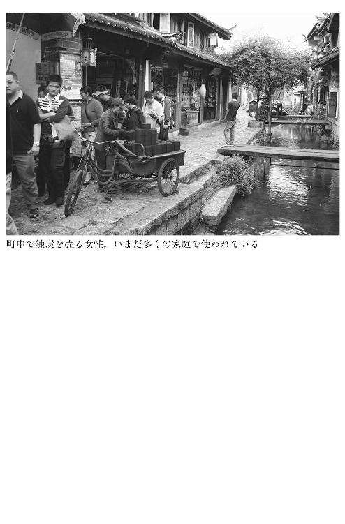

| 中国汚染の真相 (中経出版) | |
| 富坂 聰 | |
| (2014) | |
中国汚染の真相
「水」と「空気」で崩れる中国
富坂 聰
本作品の全部または一部を無断で複製、転載、配信、送信したり、ホームページ上に転載することを禁止します。また、本作品の内容を無断で改変、改ざん等を行うことも禁止します。
本作品購入時にご承諾いただいた規約により、有償・無償にかかわらず本作品を第三者に譲渡することはできません。
本作品を示すサムネイルなどのイメージ画像は、再ダウンロード時に予告なく変更される場合があります。
本作品は縦書きでレイアウトされています。
本文中に「＊」が付されている箇所には注釈があります。その箇所を選択すると、該当する注釈が表示されます。
はじめに
これから中国の水と大気の汚染について記してゆこうと思うが、その凄まじい環境破壊のイメージは、ここ数年ですっかり日本人の頭の中に定着している。テレビや新聞を通して、この問題に触れる機会は少なくない。
煙った空気のような白い靄が都市全体を包み、その中をマスク姿で身を屈めるように顔を覆って歩く人々のニュース映像や、汚染によってタールのように黒光る──時には真っ赤や黄緑色に変色した河なども見つかる──川面の報道写真。そして、富栄養化により大量発生した藻によって蛍光グリーンに染められてしまった海と格闘する地元漁師たちの姿など、少し考えただけでも次々に頭に浮かんでくるのだ。
思わず漏れ出るため息──。そんなグロテスクな画像の数々は、いま中国のネット上にもあふれていて国内だけでなく世界中からもアクセスが可能だ。環境破壊の恐るべき実態を写した写真の数々を目にした多くの日本人の脳裏には、こんな疑問の言葉が浮かぶのではないだろうか。
「いったいなぜこれほど酷い状態になるまで中国政府は問題を放置したのか？」
当然の疑問だ。かくいう私も、かつてこうした疑問を中国の役人たちに直接ぶつけてみたことがある。２０００年代はじめのことだが、そのとき彼らは判で押したようにこんな言い訳を口にしたのだった。
「中国はまだまだ貧しい。だから、どうしても経済発展が優先されてしまうんだよ」
中には「環境のことなんて、経済発展を遂げてから考えればいいんだよ」と、よりはっきり断じる者さえいた。
要するに、貧しい国には環境へ配慮する余裕などない。貧困がある限り環境破壊は続くのだと宣言しているようにも聞こえる。
目先の利益を追求するあまり、モラルや法律の壁を易々と飛び越えてしまう者が後を絶たない。それが中国社会の偽らざる現実だ。絶望的な貧困から抜け出そうともがく人々の耳には、「環境への配慮」など綺麗事でしかない。ましてや環境対策のために自らの利益を削ることなどできようはずがない。それらはすべて「衣食足りて」はじめて進むことのできる次のステップなのだ。
経済発展のために環境を犠牲にするという選択は、かつての先進国も大なり小なり持っていた価値観だ。これを以て中国は、こう反論する。
「先進国は好き勝手やってきたのに、なぜ中国だけが我慢しなくてはならないのか。中国には経済発展を享受する権利がないのか」
さらにこんな反発もある。
「環境破壊を引き起こす原因となる工場を中国に持ち込んだのは誰なのか」
もちろんわれわれは中国のこうした言い分を「根拠のない主張だ」と一蹴することはできない。少なくとも90年代の終わりごろから中国は、日本にとって夢のようなコストカットを実現してくれるミラクルボックスであり続けたのだ。日本社会が、年を重ねても収入が増えないどころか減ってゆくという未曽有の痛みを経験する中で、中国というデフレ製造装置がいかに日本の消費者の痛みを和らげたかは、この期間における１００円ショップのラインナップの充実ぶりを見れば明らかだろう。
だが、だからといって中国がいま直面する環境問題が、かつて多くの国が経てきた道と同じかといえば、それも決してそうではない。第一に規模とスピートが破格で、先進国が積み重ねてきた経験とノウハウでは対応しきれないレベルに達しているかもしれないからだ。
13億の人口を抱えた中国が、国を挙げて生産活動に邁進するそのエネルギーはそれだけでも大変なものだ。13億人の人口が、豊かさの象徴として１人１リットルずつ水の消費量を増やしたら──実際、日本の１９８０年代には朝に髪を洗って出かける「朝シャン」が流行ったことがあった──どうなるだろうか。また、１人１キロずつゴミの排出量を増やしたらどうなるだろうか。そんな仮定から想像される環境破壊が秘める潜在的な圧力に加え、現在の中国には富の偏在により生まれた貧困層が大きなボリュームで存在し、次の環境破壊予備軍となることも指摘されている。
貧困層を中心とした世界で繰り広げられる過当競争は、モラルハザードの温床でもあるからだ。
こうした一つ一つの要素がレバレッジとなって働き、環境破壊の規模とスピードを、世界がこれまで経験したことのないレベルへと押し上げてしまうのである
現状、国境を越えて広がる中国の大気汚染は、韓国に対し、もっとも大きな影響を及ぼしているのだが、日本も例外ではない。長らく使われなかった光化学スモッグ警報が復活するなど変化は徐々に顕著となりつつある。
日本や韓国の社会には、いつの間にか「ＰＭ２・５」という言葉が定着してしまったが、大気汚染の影響はいまや太平洋の上空にも作用しはじめ、世界的な気候変動の原因としても注目されるようになっている。これも、中国の環境破壊を従来の経験知から推し量れない重要な理由だ。
そしてもう一つ、中国の環境問題がこれまでの枠に収まりきらないと思われる点は、破壊の潜在的な深さである。
中国が環境対策に本腰を入れるようになったその分岐点は、先述したように経済発展の段階と密接な関係を持っているとすれば、その時期は、国民全体がある程度物質的な豊かさを享受し、その次の段階として安全な暮らしを志向しはじめることが前提となるはずだ。問題はそれが、いったい何年後に中国に訪れるのかということだ。
中国経済の未来を占うとき、よく使われるのが「13億人を豊かにする装置はどこにもない」という表現だが、ならば13億人が「衣食足りて」環境問題に目覚める時期も永遠に来ないということも想定されなければならない。また仮に、環境意識に目覚める日がやってくるとしても、それが気の遠くなるような膨大な年月を経てやっと訪れるのだとしたらどうしようもない。長い年月をかけて破壊し尽くされた環境は、もはや取り返しのつかない状況に追い込まれているかもしれないからだ。
そうなれば、偏西風が西から東に向けて吹き、海流も同じように流れている中の隣国・日本も無事で済むはずはない。つまり、日本は中国の環境問題に巻き込まれることとなり、それは同時に中国の解き難い国内問題の一部を同じ悩みとして共有しなければならないことを意味している。
グローバル化の進んだ世界にあって、他の国の問題を共有することは何も環境問題に限ったことではない。経済の視点で世界を見回せば、その特徴は十二分に見ることもできる。
つまり日本は、すでに選択の余地なく中国を理解し、彼らの抱える矛盾を一緒に解いてゆくことが宿命づけられているといっても過言ではないのだ。
そう考えたとき、環境問題を通じて見る中国こそ、その本質に近づけるのではないかと私には思えるのだ。環境という鏡に映る中国こそ、この国が抱える課題をもっとも端的に示しているからだ。
読者が本書を読み終わるとき、私と同じように感じてくれることを祈っている。
中国汚染の真相 目次
デザイン：天野昌樹
カバー写真：Imaginechina／アフロ
写真：Imaginechina／時事通信フォト（Ｐ29（※こちらを参照））
ＡＦＰ＝時事（Ｐ34（※こちらを参照）、Ｐ47（※こちらを参照）、Ｐ１３５（※こちらを参照））
時事通信フォト（Ｐ１０２（※こちらを参照）、Ｐ１６５（※こちらを参照））
校正：櫻井健司（コトノハ）
新鮮な空気を缶詰にして売ればいい
２０１４年３月、私は全国人民代表大会（全人代）が閉幕したばかりの北京の街を訪れた。全人代で提議や議論、決定などを受け、中国が今後どういった方向に向かうのか、そして中国社会には具体的にどのような変化が起きているのか、それらを確認することが主な目的だった。
かつて「ゴム印会議」──基本的に全会一致で法案が可決されるという、単なる形式的な承認手続きをする機能しかなかったことからこう揶揄されてきた──と軽視された全人代もすっかり様変わりし、いまでは政権にとって敏感な問題や政府にとって頭の痛いテーマさえ、活発な議論が起きることもある。
議会の質の変化は、それを伝える国内のメディアの体質にも影響を与え、いまでは党機関紙以下、さまざまなメディアが政府の新たに導入しようとする政策がどういうものであるのか、またその効果はどうなのかといった評価のために積極的に紙面を割くのである。
現在であれば、今後失速が避けられない経済問題にはじまり、格差の問題や国内の治安、少数民族問題、汚職や医療、高齢化に伴う社会保障の整備に関する問題など、中国国内には難問が山積している。
当然、全人代閉幕直後の紙面はにぎやかで、人々の関心の高い政策に絡む膨大な記事で埋められている。それら記事の一つ一つに目を通すだけでも、かなりの時間と労力が求められるのだ。
だが、北京での新聞チェックは、活字を追う作業となるため、ネット上の文字を追うことに比べてストレスが少ない。スターバックスの緑の看板が見つかればさらに作業は快適となる。
街角の「報刊亭」（新聞スタンド）で買い求めた新聞の束をめくってゆけば、期待を裏切らない仰天ニュースが必ず見つかるのも、この作業の醍醐味の一つだ。それも思わず吹き出してしまう記事から、自分の翻訳が間違っているのではないかと不安を覚え、読み返してしまうような衝撃的な事件まで、材料には事欠かない。
３月21日、いつものように新聞をめくっていると、『新京報』の中に目を引く記事があった。
目に飛び込んできた見出しを見て思わずのけ反ってしまったのだが、そこにはこう記されていた。
〈貴州は今後、新鮮な空気を缶詰めにして売り出すべきだ 習近平はユーモアを込めてこう提案した〉
いま中国を覆っているのは、未曽有ともいうべき深刻な大気汚染である。その深刻な大気汚染をつくり出したことに少なからず責任を負っているはずの国のトップが、本当にそんなのん気な発言をしたというのだろうか？
何かの間違いではないかと思って記事を読みはじめると、副題にはさらに詳しくこう記されていた。
〈〝ＰＭ２・５が空気の質を落としている問題は、すべての中国人の幸福感と密接にかかわる問題である。だからこそ貴州省は、将来、新鮮な空気を缶詰にして売ればいい〟 今年の両会（全人代と中国人民政治協商会議）の期間中、貴州省代表の会場を訪れた習近平は、貴州省が新鮮な空気を缶詰にして販売することを提案した〉
どうやら誤読ではないらしい。
記事は、全人代で習近平からアドバイスを受けた貴州省が、両会閉幕から７日間を経て「空気の缶詰」の販売計画を本格的にスタートさせたことを簡単に伝えている内容でもあった。記事では、新鮮な空気の供給源として梵浄山が筆頭の候補地であることや、６月20日までには出荷できる体制を現地政府が整えようとしていることを積極的なトーンで伝えているのだ。
あくまで貴州省が本気であることは分かった。だが、メディアの報道姿勢に「そもそもそんな計画を立てること自体に疑問を持つ」といったニュアンスは微塵も感じられない。「産業に乏しく貧しい貴州省のために、習近平が貴重なアドバイスを与えてくれた」といわんばかりの論調なのだ。
改めていうことでもないが、大気汚染が深刻であれば、空気を汚す汚染物質をできるだけ出さない対策をとることがもっとも重要であり、汚れた空気の中に暮らす人々に缶詰にした新鮮な空気を売っても何の解決にもならない。かえって汚れた空気の中で暮らす人々の神経を逆なでしかねない発言だろう。
２０１４年２月、習近平はかつて自身も暮らしていた北京市内の旧市街地に残る四合院を視察したのだが、〝煙霧〟の中の視察と報じられた（『人民日報日本語版』）その日は、ＰＭ２・５の濃度が高い最悪の日でもあった。この視察の様子が写真で配信されると、習主席がマスクをつけていないことがネット上で話題となった。中には〈「庶民とともに呼吸し、運命をともにする偉大な指導者」などと皮肉が書き込まれた〉（『産経新聞』２月25日）という。
市民の苛立ちを反映した書き込みだが、それでもトップに強い非難の矛先が向くことがないのが中国である。
民主選挙の下で政治家として生きる西側の政治家たちが中国の独裁体制を羨ましく感じるのは、きっとこういうことなのだろう。
もし東京が、マスクをしなければ外を歩けないほど深刻な大気汚染にさらされているとして、そこで首相が、「○○県は（産業はないけれども）新鮮な空気があるのだから、それを缶詰にして売り出せばチャンスが広がる」と能天気な発言をしたら、国民からどれほどこっぴどく叩かれることだろう。
ちなみに、記事の中では新鮮な空気を缶詰にした国外の例として、〈日本では富士山の空気を缶詰にして売り出している〉という記述も見つかり、さらに複雑な気持ちにさせられたのだった。
もはやマスクなしでは暮らすことができない都市
中国の空気が深刻な状況にあることは、近年、中国国内でも相次いで報告されるようになってきている。
その一つに上海社会科学院と社会科学文献出版社が共同で執筆した『国際都市青書 国際都市発展報告２０１４』がある。上海社会科学院といえば政府系シンクタンクである。政府系と名がつけば、国に批判的な表現は避ける傾向を持つと思われがちだが、現実はそうではない。
北京の大気汚染について報告書は、〈すでに汚染の度合いが極めて高く、世界の水準を大きく上回っている〉とした上で、〈もはや人類が暮らすことのできない程度にまで汚染が進んでいる〉と非常に厳しい表現を用いて警告を発しているのだ。こと環境問題に関しては、すでに政府に配慮する段階は過ぎていると判断しているのかもしれない。
北京の大気汚染の状況は、中国系のメディアでさえ、「もはやマスクなしでは暮らすことができない都市」（香港ＡＴＶ）といった表現を使うまでに深刻になってきているが、その実態は国内で環境問題を所管する環境保護省が提供するデータからも読み取ることができる。
全人代の期間中に行われた記者会見に臨んだ呉暁青環境保護省副大臣が、「中国国内の都市の中で大気汚染の状況がもっとも悪いとされたワースト10の都市のうち、北京、天津をはじめ、河北省の都市が７都市も含まれていた」（『新京報』２０１４年３月９日）と公表したことも閉幕後の話題となった。
環境保護省が行ったこの調査は、２０１３年の大気の状況について、全国74都市に観測所を設けて汚染物質の濃度を測定した結果であるが、対象となった汚染物質は二酸化硫黄、二酸化窒素、一酸化炭素、オゾンという従来からの汚染物質に加え、ＰＭ２・５とＰＭ10が新たに加えられている。
日本語としてもすっかり定着したＰＭ２・５は、粒径２・５マイクロメートル以下の粒子状物質のことであり、微小粒子状物質とも呼ばれている。同じようにＰＭ10は、粒径10マイクロメートル以下の粒子状物質と規定されている。
昨今、この微小粒子状物質が話題となったのは、粒の細かさのため呼吸器系の奥深くまで入り込みやすく、それにより呼吸器や循環器の疾患、肺癌など極めて重い健康被害を引き起こす可能性が指摘されているからだ。
結果、どのようなデータが明らかになったかについては、『新京報』の記事から紹介したいと思うが、まず強調されているのは全74都市のうち、年間でＰＭ２・５の濃度の基準──Ｐ23の表１（※こちらを参照）にあるように、中国が２０１２年２月に策定した汚染物質の濃度基準には一級基準と二級基準が設けられていて、各都市が基準を満たしていたか否かの判断は基本的に二級基準が適用されている──を完全に満たした都市は、わずかに３都市（チベット自治区のラサ、海南省の海口、浙江省舟山）しかなかったということだ。
74の都市を全体から眺めたとき、ＰＭ２・５の年間平均濃度は72マイクログラム毎立方メートルで、中国が定める二級基準である35マイクログラム毎立方メートルと比べ約２倍という高い数値となっているのだ。
この調査でＰＭ２・５の濃度の値が35マイクログラム毎立方メートルを超えなかった日数は約２２１日で、60・５％に達したというが、これには地域差があり、北京、天津、河北省の13都市における平均値では37・５％にまで下がり、これが上海を含む長江デルタ地域の20都市の平均では64・２％、珠江デルタ地域９都市では76・３％にまで上がるという。
こう記すと上海周辺や広東省一帯では比較的空気はきれいなのかと勘違いしそうになるが、実態はそうでもない。
ＰＭ２・５の年間平均濃度を３つの地域別に見てみると、京津冀地域（北京・天津・河北省）が１０６マイクログラム毎立方メートルとダントツに高いのは当然としても、比較的よいと思われた長江デルタ地域は67マイクログラム毎立方メートルと基準値の２倍弱、珠江デルタ地域であっても47マイクログラム毎立方メートルと、基準に達することはなく、理想的な数値とはいい難いのである。
ちなみに日本のＰＭ２・５の濃度（一般環境大気測定局の数字）を見てみると、２０１０年度では年間の平均値が15・１マイクログラム毎立方メートル、２０１１年度には15・４マイクログラム毎立方メートル、２０１２年度が14・６マイクログラム毎立方メートルとなっているのだ。中国の現実と比較すれば、彼我の差は歴然だ。一言で〝大気汚染〟といっても、日本と中国ではその概念がまるで違っていることがよく理解できるだろう。
散歩で連れていた犬が見えなくなった
そもそも大気汚染対策といっても、中国が国を挙げてこの問題に取り組むようになったのはそれほど昔のことではない。せいぜい２０１３年の秋ごろ──といっても全国津々浦々にまで意識が共有されているかどうかについては現状でもまだ怪しく、実態はまだまだ経済発展を優先させているのだが、そのことは後に述べる──からといってよいだろう。それほど当局の感度は鈍かったのである。
これは国民の意識にも直結する話だ。
実際、大気汚染が深刻な北京市を歩いていても、２０１３年の春ごろまではマスクをつけて歩いている市民を見かけることなどほとんどなかった。
一方で日本のテレビ局は中国の国民よりも敏感にこの問題を取り上げるため、その度に北京の支局員たちが「マスクをつけて歩く現地の人々」という映像をヤラセではなくカメラに収めるために、市内を必死に走り回って探さなければならなかった。そんな苦労話は有名である。
中国では、鳥インフルエンザの感染の広がりが社会の大きな関心事となり、感染による死亡者のニュースが大々的に報じられる冬場から春にかけて（11月から４月まで）の期間でさえ、予防のためにマスクをして歩いている人の姿を見ることは稀だった。
私自身、北京でマスクをつけて歩くことはほとんどないが、２０１３年の４月には北京から地方に向かったため、駅の周辺ではマスクをつけることにした。
地方からさまざまな人がさまざまな物を背負って集まる駅は、当然のこと、病気の感染がもっとも心配される場所の一つである。特に生きたニワトリを荷物として運ぶ者が多い中国では要注意だ。そのため北京市内にいるときとは違う警戒心を働かせ、マスクをつけることにしているのだ。
だが、驚いたことに北京西駅のどこを見回してみてもマスク姿で歩いている者など１人も見つからない。さらにバツの悪いことに、私が用意していったのは医療用にも使える突起した形状のマスクで、通称〝ダチョウ・マスク〟と呼ばれる大袈裟なものだった。そのため、好奇の視線を一身に浴びることとなってしまったのだった。
これは余談だが、当初こそいたたまれない気持ちになったのだが、駅では大袈裟なマスクが非常に有効であることに気づかされた。というのも、中国では人と人の距離が近く、列に並ぶ際にも体を密着させてくるケースも少なくない。また、そうした距離の中でタンを吐いたりすることもある。
だが、当日の私はダチョウ・マスクを着用していたことで、周囲から逆に警戒の対象──おそらくは私が重篤な病気に罹っていると誤解した──となって、近寄ってくる者がいなかったのである。
だが、日本人から見て明らかに危機意識が不足していると思われた中国の人々の間にも、いまではマスクが定着しつつある。その分岐点となったのが、２０１３年10月のことである。10月から東北地方を中心に石炭による暖房が解禁されたことにより、昼間にもかかわらず空が真っ黒になるなど、大気汚染の実態が視覚からもはっきり認識できたからだった。
石炭による暖房解禁の影響をもっとも強く受けた都市の一つが哈爾濱である。10月21日、昼間の哈爾濱が夜のように暗くなっている様子を伝えたのは国営の新華社通信である。見出しは、〈東北を襲った深い霧は相変わらず広範囲にわたっている「お母さん、今日は世界の最後の日なの？」と子供が訊ねた〉（２０１３年10月22日）だった。
哈爾濱だけでなく、長春市の労働公園でも早朝６時にＰＭ２・５の濃度が５９５マイクログラム毎立方メートルまで上昇したという。この日のネットでは、「散歩で連れていた犬が見えなくなった」といった書き込みも見られたほどだった。
こうした現象は北京を中心とした華北一帯でも深刻となり、連日、ＰＭ２・５の濃度の１日平均の値が基準値を10倍以上も上回る日が続いたことによって、中国の人々もやっと危機感を高めたのだ。
北京から工場が強制移転させられた
だが、北京の空気が汚れているという感覚は、個々に暮らす市民にとって決して新しくはない。生活する上での実感として話題になる──１日の終わりに鼻をかむとティッシュが黒くなるなど──こともあれば、専門家から指摘されることもあった。しかし、何より強く意識するきっかけとなったのは、国際社会の厳しい目にさらされる機会を持ったことだ。
それが２００８年の北京オリンピックの開催であった。オリンピック開催が近づくにつれ中国の首都に注目が集まり、それに合わせて同地の環境の問題も大きくクローズアップされていった。
中でも北京の汚れた空気の問題に対しては、長距離走の選手を中心に批判の声が高まっていったのだった。
以下に紹介するのは、２００８年３月19日にアメリカの通信社『ブルームバーグ』が配信した記事である。
〈マラソンの世界記録保持者、エチオピアのハイレ・ゲブレシラシエ選手（34）は北京のスモッグと夏の蒸し暑さに非常に驚き、北京オリンピックのマラソン競技への出場を取り止めた。医療関係者らは、同選手が心配するのも無理はないと語る。
ゲブレシラシエ選手は、猛練習がきっかけでぜんそくを患っており、大気汚染の影響で症状が悪化した。練習が原因でぜんそくの症状を持つ選手は、北京では危険な状況にさらされる可能性が高い。石炭火力発電所から排出される煙や建設現場から出る粉じん、自動車の排気ガスが大気中に充満しているからだ。
カリフォルニア大学サンフランシスコ校で大気汚染の肺に対する影響を研究するジョン・バルメス医師は「大気汚染がかなり深刻な場合、ゲブレシラシエ選手は入院が必要になる可能性もある」と指摘。同選手が「どのような状況になるか心配するのは当然だ」との見方を示す。
オリンピック選手の25％がぜんそくの症状を抱えている。ぜんそくにかかると気管が腫れ、粘液が過剰に分泌され、筋肉が収縮するため酸素の供給が減少する。オーストラリアのオリンピックチームを担当するぜんそくの専門家、カレン・ホルツァー氏によると、軽度の発作でも肺機能が約10％低下し、深刻なケースでは50％以上低下することもある。
ゲブレシラシエ選手は先週、北京オリンピックでマラソン競技に出場すれば２０１２年のロンドン・オリンピックに出場できる可能性が低くなるとして、北京では１万メートルの競技にのみ出場する計画であることを明らかにした。同選手の代理人であるジョス・ヘルメンス氏は、過剰な練習を積んだマラソン選手は身体へのダメージが長期化し、選手生命が短くなる可能性があると語る〉
経済発展を遂げた中国の成果を〝お披露目〟する場と位置づけていた北京オリンピックを、もし有力選手が次々と欠場するようなことにでもなれば、国家としての威信に傷がつくことは避けられなかった。
このことは、中国が一時的にせよ、本気で大気汚染対策に乗り出す〝十分過ぎる〟動機になったはずだ。
中国が本気になって問題を解決しようとしたことは、『ブルームバーグ』の記事からも読み取れる。
〈北京市は、８月８日に予定されているオリンピックの開催までに大気の状態を改善するため１７０億ドル（約１兆６８００億円）を支出する計画だ。北京市によると、この大気汚染改善策により、青空が広がる「ブルー・スカイ・デー」は２００７年に２４６日と、１９９８年の１００日から増加した〉
大気改善プロジェクトには強い自信を持っていたのか、〈北京の吉林副市長は先週、「８月には空気がきれいになることを約束するので安心してほしい」と述べた〉というのだ。
実際、国を挙げた取り組みには有効なものが多かった。
交通量を制限するため──これは大気汚染対策という側面だけでなく、すでに限界に達していた渋滞解消のためにも、対策をとらざるを得なかったという事情もあった──まず公用車の使用を大幅に制限したのに続いて、一般車に対してもナンバープレートの末尾が偶数か奇数かで、それぞれ北京市中心部への乗り入れを制限するという策を講じたのだった。
また、有害な汚染物質を排出するとされた企業が次々と北京から他の地域に強制移転を迫られる動きの中では、中国の経済発展の牽引車であり象徴でもあった首都鉄鋼──改革開放の父・鄧小平がまだ健在であったころ、何度も工場の視察に訪れたことで全土にその名前を轟かせた企業──でさえ工場を北京から移さざるを得なくなったのには、多くの北京っ子たちも驚いたようだった。
副市長が胸を張ったように、「ブルー・スカイ・デー」が増えているという実感も広がっていた。
私はこのころの北京に何度も足を運んでいるが、現地で友人たちと話をすると、「そういえば、空が青いというのはこういう色だったんだということを久しぶりに思い出したよ」と懐かしそうに口にする者が少なくなかった。
見せかけの環境対策
だが、「北京オリンピックを何とか乗り切るため」の対策は、それが過ぎれば長続きはしなかった。
北京から他の地域に強制的に移転させられた多くの工場も、新たに脱硫装置の取りつけなど環境対策を強化した上での移転だったのかといえば、決してそんなことはなかった。
北京にとって不都合なモノを、いったんヒトの目につかない場所に移しただけの対策であって、それは中国全土で見れば当然プラスマイナス「０」であり、公害を他の都市に押しつけただけのことであった。
つまり、この数年後にさらに深刻な問題として大気汚染が北京の人々に降りかかってくるのは、当然の帰結なのだった。
北京が「マスクなしでは歩くことのできない街」になってしまうのは、北京オリンピックから５年後のことだが、この間、全国で深刻化していった大気汚染は、すべて改革開放以後の猛烈な経済発展によるものなのだろうか。
確かに、中央が改革開放政策を打ち出し、鄧小平の「南巡講話」により本格的な競争社会の幕が切って落とされた後に、生産活動は猛烈な勢いで広がり、各地でそれに付随した環境破壊が起きたという流れに間違いはない。
だが、大気汚染の原因がそれだけかといわれれば少々引っかかるのだ。もっと分かりやすい言い方をすれば、それ以前の中国に何も問題はなかったのか、ということだ。
答えは明らかにそうではない。
中国の環境破壊には、経済の急成長の歪みという側面を第２幕とすれば、その前には「社会主義経済」の非生産性が招いた深刻な環境破壊という第１幕が存在しているからだ。
１９９１年にソビエト連邦が崩壊する２年前、ポーランドを発端に東欧の社会主義体制が次々に打ち倒され、ついにはベルリンの壁も崩れるという変化が世界を襲った。
この世紀の大事件により、それまで厚いベールに包まれていた社会主義国の実態が次々と明らかにされるようになった。
このとき、世界が目撃したのは、予想以上に停滞した社会主義経済の姿であり、老朽化した生産設備を使い続けている各国の実態だった。
このことは圧倒的な競争力の欠如を意味しているのと同時に、深刻な環境破壊が引き起こされていることを予感させ、実際、調査を続けた結果、社会主義体制下における環境破壊は、西側諸国が想像していた以上に進んでいたことが明らかになったのである。
生産効率の悪さが指摘された社会主義経済では、どの国有企業も政治的に働き、利益追求に対するインセンティブが働きにくいという特徴を持つ。
利益の追求に不熱心であれば、当然のこと市場からは敗者としてスポイルされる──ただ現実には国内ではほとんど競争にさらされることもなかった──運命が待ち受けている。市場に受け入れられなければ利益を上げることはできない。企業の収益も圧迫されることは避けられない。
利益を上げられなくなる企業であれば、自由主義経済の世界では倒産を余儀なくされるが、各企業が地方自治体としての一部の機能も併せ持っていた社会主義体制下の国有企業であれば、それでも予算によって生き延びることができた。
利益が上がらなければ設備投資をすることも控えなければならない。こうして生産設備が更新されることもなく、いつまでも老朽化した設備が稼働し続けるという状況が生まれるのである。
これが環境破壊を進める大きな原因になったことはいうまでもない。
さらに非民主的な政治制度により、住民の不満の声が政策に反映されにくいという事情も問題に拍車をかけた。国有大企業の政治力に比べて圧倒的に弱小な市民は、暮らしに直結する環境がテーマであっても圧し殺されることとなったのだ。
こうした環境に〝やさしくない〟社会主義国に共通する要素は、同じように中国にも当てはまるものばかりだ。
非効率な生産体制、老朽化した設備を使い続ける工場、風通しが悪く、下の意見を圧殺する政治体制......。環境に厳しい、こうした特徴は中国も共有し、さらに「衣食足りて」環境を考えるという前提も、中国が文化大革命という混乱によって背負った貧しさは、環境への意識の低さとなって働き、環境破壊という問題を加速させる要素となったのである。
実際、中国の大気汚染は90年代にもすでに深刻であったと私は考えている。私自身も90年代の半ばには、月刊誌『フォーサイト』で中国の非効率な石炭燃焼による大気汚染の影響で、日本海側に降る雨が酸性化し、松が枯れるという現象を生んでいることをレポートしているからだ。
新潟や大分でも「光化学スモッグ注意報」が発令された
当時、そのことを中国が認めることはなかったが、日本に飛来する汚染物質には、石炭を燃焼させたときの特徴が指紋のように残っていて読み取られた。科学的な関連性については２００７年に出した拙著『中国 ニセ食品のカラクリ』の中で、当時山形大学文理学部の准教授であった柳沢文孝氏がこう指摘している。
〈「大気汚染物質は、間違いなく中国から来たものです。そのことは、樹氷に含まれる硫酸の中の硫黄を分析した結果からも明らかなのです。そこには国内の硫黄には見られない特徴があることが分かっていますが、それを追跡していくと、中国の山西省などで使われている石炭から出たものと特徴が一致するのです。大気汚染による酸性度の変化も、九四年から緩やかに始まり、二〇〇六年までに約十倍にもなっているのですが、これは中国の工業化の流れとも一致しています。二つの現象に関係があるのは明らかでしょう」〉
専門家から出されるこうした指摘は、なかなか日本社会で広く認識されることはなかった。
というのも、日本の環境問題と中国を結びつけて書く新聞など、90年代はおろか、２００６年を過ぎるまでほとんどなかったからである。
だがその実、中国の大気汚染の進行は、すでに90年代にかなり深刻な状況であったと考えられている。
たとえば、老朽化した重厚長大型の工場が集積していた四川省の都市・重慶である。
ここでは煤煙の被害が深刻になっていて、国内でも多くの告発記事が当時から出ているほどだった。実際、重慶で雨に打たれると、白いシャツが真っ黒になってしまうといった話は土産話のようにあちこちで語られていたのである。
つまり、中国における大気汚染は、改革開放を起源とする30年間の蓄積ではなく、社会主義体制下で蓄積された問題の上に急激に積み上げられた結果だと見ることができるのである。
90年代後半にはすでに兆候が現れはじめていたと思われる中国の大気汚染だが、この時点で日本が国境を越えて到達する汚染物質の影響を問題視することはなかった。
前述したように、中国自身、自国が汚染した空気が国境を越えて日本で環境破壊を引き起こしているという事実を頑として認めようとしなかったことに加えて、日本側にも日本海沿岸の地域で顕著となっていた土壌の酸性化や松枯れといった問題を、中国の影響として考えるよりも、その原因を「松くい虫」に求めるといった考え方を選択しようとしていたからである。
だが、２０００年を越えるあたりから日本の大気にも徐々に変化が現れはじめるのである。その典型が「光化学スモッグ注意報・予報」が各地で発令されるようになったことだった。
たとえば、兵庫県では２００１年度には一度も発令されなかった予報が、翌年になると14回と数字が一気に膨れ上がった。
２００６年になると、東京都が「光化学スモッグ注意報」を出したのに続き、山梨、埼玉、栃木、群馬など関東甲信越地方にもその影響が及んだ。関西、九州地方はより深刻で、熊本市内の学校では「光化学スモッグ注意報」を受けて部活動が中止され、全国ニュースにもなった。
日本における「光化学スモッグ注意報」の発令は、公害問題がピークを迎えた１９７０年代にもっとも多く、80年代には大幅に減少している。警報に至っては90年代に一度も発令されておらず、すでに「光化学スモッグ」という言葉自体に日本人が馴染みを持てなくなっていたのである。
だが、２０００年を越えると、各地で思い出したように注意報が出されるようになり、06年には前述した熊本県や長崎県など全国25都道府県で発令が確認されるようになるのだった。
さらに07年には、観測史上はじめてという新潟県や大分県でも注意報が発令され、同年５月には北九州市の市内85の学校で、予定されていた運動会を中止せざるを得ない状況に追い込まれたのである。
パネルになった〝１００万ドルの夜景〟
２００７年になると、いよいよ日本のメディアでも中国から飛来する汚染物質を無視することができなくなり、関連性を指摘する記事がちらほらと目立ちはじめた──それでも中国と名指しする報道はまだ少なかったのだが──。
この少し前、日本よりもずっと強い危機感を持って大陸から飛来する汚染物質への対処を余儀なくされていた地域があった。
中国大陸と陸続きでつながる香港だった。
１９９７年に中国に返還された香港は、経済発展により所得を増した大陸からの観光客が大量に訪れるようになるにつれ、人民元を持った大陸観光客の購買パワーを思い知ると同時に、そのマナーの悪さなどに対して反感が地元で強まっていった。中国の恩恵に触れながらも、一方でかえって反発を強めるという現象は、中国と接する国には特徴的に現れる共通の現象かもしれない。
これは、中国との距離が近づけば近づくほど顕著となるため、香港でより特徴的に現れたのだろう。言い方を換えれば、現在の香港は明日の日本と見ることもできるのだ。
そんな香港が本格的に大気汚染対策に取り組みはじめるようになったのは、２００６年のことだ。香港に青空を取り戻すという意味を込めたキャンペーン「藍天計画」が、当時の行政長官（香港特別行政府の長）、曽䕃権の肝いりでスタートしたのが同年の６月だった。
環境キャンペーンの「藍天計画」が具体的に定めた目標は極めて詳細でかつ具体的であった。
たとえば、学校や公共の施設での冷房の設定温度を25・５度以下にしないことである。東日本大震災の影響で28度の設定が徹底される日本から見れば、これも低い目標に思われるかもしれないが、以前にはレストランなどで半袖で過ごしていると寒くて震えてしまうほど冷房をきかせていた香港──室温を低くすると大気中のばい菌が減少すると信じられていた関係からホテルでも設定温度のメモリが10度以下まであるのが普通であった──からすれば大きな進歩だった。
この設定基準を順守した学校や企業に対しては、「緑色学校奨」「環境保護企業奨」などの賞を設けて顕彰を行うという念の入れようだった。
また、驚いたのは、キャンペーン開始から３カ月後には「吸煙修訂條訂草案」を議会に通過させ、香港においてはあらゆる公共スペースでの全面禁煙を、段階を踏むことなく一気に実現してしまったことだ。
同時に、マイカー通勤を規制して、公共交通機関への切り替えを政策で推し進めるなどの対策も行ったのだ。しかし、こうした施策が香港の空気の浄化にとって微々たる貢献にしかならないことは誰の目にも明らかだった。
理由は、香港のほとんどの市民は大気汚染の原因となる汚染物質が香港発ではなく、大陸から来ていることを知っていたからだ。
香港で「藍天計画」をスタートさせた曽䕃権自身がかつて「香港の大気汚染の原因の80％は珠江デルタ（中国広東省）にある」と発言して物議をかもしたことがあるように、この一帯の工場群から吐き出される汚染物質が季節風に乗って押し寄せてくるという現実に頭を悩ませていたのである。
だが、当時の行政長官選挙で最大の争点にもなった大気汚染の問題を安易に中国大陸と結びつけて批判できない事情が香港にはあった。
「その理由は、香港人の生活はさまざまな意味で大陸に大きく依存しているからです」と理由を教えてくれたのは、日本にも留学した経験のある香港のジャーナリストである。
「香港は水に恵まれていません。ですから、トイレを流す水は海水を使っているほどです。だから、飲み水は大陸から運んできているのです。また、電力も同じように大陸から供給を受けています。このライフラインを大きく大陸に依存していることで、香港市民はまだしも、行政の関係者はみな大陸には頭が上がらないのです。だから、たとえ大気汚染の原因が明らかに大陸にあっても、公然とそうは言えなかったのです。しかも、いまや環境産業をはじめ、多くの産業が中国依存を強めている中では、余計にそうならざるを得なかったのです」
当時、私自身も香港を訪れ取材を行っているが、「藍天計画」を呼びかけるポスターが地下鉄や公園、ショッピングモールなど、ありとあらゆる場所に貼ってあったのを記憶している。
そして当時、香港の人々がもっとも気にしていたのが「香港から夜景がなくなってしまうのではないか」という心配だった。
この事情については、前出『中国 ニセ食品のカラクリ』の中で紹介している香港在住の広東人のコメントが正確なので引用したい。
〈「（前略）九龍から海を挟んで見られるはずの対岸の夜景が、いまでははっきり見られない日の方が多くなってきているのです。
それは、晴れている日でも同じで、いつも何となく靄がかかったようなぼやけた景色なのです。そもそも香港は多湿という特徴がありますが、原因はそういった霧や靄とは明らかに違います。香港人はこれを〝煙霧〟と呼んでいますが、その正体は空気の汚れです。香港政府はなかなかはっきりいいませんが、住民はみなその原因が大陸から運ばれる汚染された空気のせいだと知っています。そして、このままではいつか香港の夜景も完全に消えてしまう日がくるかもしれないと危機感を抱いているのです」〉
このコメントからすでに８年が経過した香港では、当時人々が抱いていた危惧がほぼ現実となったようだ。
いま、九龍から香港島を望む海岸沿いの公園には、夜景が見えないことを前提として夜景を映した巨大なパネルを設置していて、観光客たちがそのパネルの前で記念撮影をしている。
かつての〝１００万ドルの夜景〟はすっかりバーチャルな存在と化してしまったのだった。
広東省の大気状況が良好になった？
中国で起きる変化は、最初に広東省で見られる。それが、これまで私が中国とかかわって得た一つの考え方である。
広東省が政治の中心部である北京から遠く、自由な雰囲気が濃厚であることや、中央への影響が薄いことから北京もそれを容認する傾向にあるからだ。そして何より香港と隣接し、あらゆるものやサービスが表だけではなく、裏からもどんどん押し寄せてくることがある。
この「広東からはじまる」という傾向は、経済発展の段階という視点からも当てはめて考えることができる。
香港に大気汚染をもたらした工場群は、たいてい改革開放政策を進める中では比較的初期の段階で中国に進出した企業が中心だと考えられていた。
中国が門戸を開くと同時に進出した産業といえば、安い労働力が目当てであったことはいうまでもない。すなわち繊維産業を筆頭に、おもちゃ、傘、靴といった労働集約型の産業である。
こうした産業に従事するのは、たいていが中小企業というのは各国に共通する事情である。概して資本力にも恵まれていない。であれば、当然のこととして環境対策に振り向けるべき資金はなるべく削減したい──そもそも中国に生産基地を移すメリットには、安価な労働力という魅力のほかに、初期のころには環境問題に厳しくないという事情も働いていた──という本音を抱えての中国進出となったのである。
コストをとことんまで切り詰めたい中小企業の願いを、ほぼ満額回答で叶えてくれるのが当時の中国であった──といっても日本の企業は歴史問題という爆弾を抱えていたために先発の香港や台湾、韓国の企業のような野放図な対応をしたわけではないのだが──といっても過言ではない。地元政府にも環境よりも生産を優先する風潮が根づいていたからだった。
進出した外資が、自国ではできないコストカットを実現させることで環境が犠牲になるという傾向は、中国の地場産業が成長するにつけ、さらに加速されていった。地元の経営者が同じく地元の競合他社との競争に邁進するあまり、歯止めのないコストカットが展開されていったからである。
こうして華北から東北にかけて深刻な大気汚染が広がるよりもずっと以前に、珠江デルタを中心とした広東省一帯が深刻な大気汚染に見舞われるようになり、香港から〝１００万ドルの夜景〟を奪ってしまったのである。
ただ、前述したように現在の珠江デルタのＰＭ２・５の値は中国の中では決して悪いほうではない。ＰＭ２・５の年間平均濃度は47マイクログラム毎立方メートルで、京津冀地域（北京・天津・河北省）の１０６マイクログラム毎立方メートルと比べても半分以下、比較的よいとされる長江デルタ地域（67マイクログラム毎立方メートル）と比べても、そのよさが見て取れるのだ。
環境破壊でフロントランナーであった広東省のイメージは大きく変わったことになるが、これも「最初の変化が広東省から現れる」法則の一つだろう。
２００７年、現国務院副総理の汪洋が広東省党委員会書記に就任して間もなく、広東省は汪洋の打ち出した「鳥かごにはもう古い鳥はいらない」というかけ声の下、労働集約型産業から高付加価値産業への誘致に積極的に乗り出していったのである。
これは広東省の所得の高まりを受けて、労働賃金の上昇が外資誘致に影響を及ぼしはじめていたことが引き金となった改革と考えられた。しかし、労働集約産業はまだまだ雇用環境の厳しい中国にとって必要な産業であり、少なくとも自ら「いらない」と切り捨てるほどの対象ではなかったのである。つまり、台湾や香港、韓国といった繊維産業を中心に工場を広東省からバングラデシュなど東南アジアに移転する動きが加速していたことを受けて、広東省が危機感を募らせた結果として発せられた「鳥かご」発言だったのである。
だが、皮肉なことに広東省を襲った製造業の「広東省離れ」が、かえって同地の環境にとっては追い風として働くのである。
現在、広東省の大気状況が比較的良好──といっても、あくまで中国における基準であるが──に保たれているのは、資本力のない工場が逃げ、代わりに最新式の設備を備えた高付加価値の工場が進出したためである。
大気汚染は、この変化に伴い北上したというわけだ。
「アメリカの陰謀だ」
中国の大気汚染問題の中心が京津冀地域（北京・天津・河北省）及び東北一帯に移ったことは、中国自身が大気汚染の問題を全国的な問題として真剣に向き合うきっかけをつくったと考えられる。
中でも首都北京が、度々煙ったような空気に包まれている映像がテレビで流されるようになると、中国人の意識にも変化が生じるようになった。
「われわれが吸っている空気は、はたして安全なのだろうか？」
中国の人々の間に芽生えたこの疑問に対し正面から答えを出したのは、意外にも外国の機関であった。それが北京に置かれたアメリカ大使館である。
この大気汚染をめぐって勃発した米中の対立は、中国政府の環境汚染に対する意識の低さを露呈した出来事として人々に記憶されることとなった。
ほんの数年前のことだが、その感覚の遅れをそのまま伝える意味でも、当時、私が『ニュース ポスト＆セブン』に寄稿した記事をそのまま以下に引用してみよう。
〈「えっ、霧だって？ そんなわけないでしょう。どう見たって空気汚染が原因でしょう。みな、あまりに異常で怯えているよ」
２０１０年の11月下旬、北京をはじめ華北地方一帯に広がった〝大霧〟（広範囲を覆った霧を指す）は、北京オリンピック以降忘れていた空気汚染の問題を改めて中国の人々に思い出させるきっかけとなった。
ＣＣＴＶのニュースで真っ白になった北京の映像を見た直後に国際電話をかけると、北京に住む友人は冒頭のように語ったのだ。
中国のメディアが〝霧〟とした空気の正体は、その後の報道によればＰＭ２・５と呼ばれる空気中の微粒子で、汚染物質であることが明かされた。
汚染された空気に包まれた北京は視界が遮られ、平均で５００メートル、もっとも酷いときには50メートルにまで下がり、航空機の離発着に支障をきたし実際に８００余便が欠航となったのである。
北京市朝陽区にあるアメリカ大使館は、このＰＭ２・５の空気中の濃度が１立方メートル当たり５２２マイクログラムとなり、基準とされた５００マイクログラムを超えたと警告したのである。
こうした事態を受けて北京市の環境保護局副局長も「中程度の重汚染」であることを認め、「肺や心臓に不安のある人々はもちろん、健康体の人も屋外での活動を控えるよう」中国版ツイッターで呼びかけたのである。
実際、北京市内の小児科病院には体調不良を訴える子供たちで長蛇の列ができパニック状態に陥ってしまったのだ。
この体験で北京の人々は、08年のオリンピックによって好転したはずの環境汚染が、実は何も変わっていなかったことを改めて実感することになった。
考えてみればあの時期に多少解消された北京の渋滞も、いまやパワーアップして戻ってきているのだから当然のことなのだろう。
それにしても空気汚染の告知に中国版ツイッターとは、まさに中国の今の世相を反映した変化だ。昨年、中国版新幹線事故でも民意を代弁したのはメディアではなく中国版ツイッターだったことは記憶に新しい。昨年末に発表された「今年の漢字」も中国版ツイッターである「微博」からとった「微」であった。この中国版ツイッターの影響が大き過ぎるため、当局は昨年末に完全実名制への移行に踏み切ったほどである〉（２０１２年１月８日）
アメリカ大使館がＰＭ２・５の数値を公表しはじめた当初は、中国政府は「アメリカの陰謀だ」として強く反発していたが、大気の悪さを実感していた市民がネット上で反発したことを受けて渋々認めるという経過をたどった。ここでも凄まじい勢いで普及したＳＮＳが大きな役割を果たしたのだが、それにしても不信感を招いたのは中国政府の態度である。これほど明らかな環境汚染を前にしても、アメリカが言いがかりをつけたとばかりに強い口調で反発する態度は、やはり大国としての責任感の欠如を指摘されても当然だろう。
もし、アメリカ大使館の指摘がなければ自ら進んで対策に乗り出すこともなかったかと想像すれば、中国の大気汚染がどれほど深刻な状態になっても放置され続けた可能性を思わずにはいられないのだ。
大気汚染と戦う政権
いずれにせよアメリカに反発する中国の主張は、国民がアメリカ大使館の公表する数字に敏感に反応したことでもろくも崩れてしまったのである。このことは環境問題という枠を超えて、「やはり都合の悪いことは平気で隠す」という体質を露呈することとなり、政権に少なからぬダメージを残すこととなった。
だが、転んでもただでは起きないのも共産党政権が備えている一つの大きな特徴である。
アメリカの陰謀だと反発し、大気汚染はないと強がっていたのが２０１１年末までの中国の態度だったが、そのわずか３カ月後には、今度は自ら進んで大気汚染と戦う政権という立場に転じたのである。
これも分かりやすいので、前出の記事からおよそ２カ月後に同じサイトに掲載された記事を引用してみよう。記事のタイトルは〈中国大気汚染対策は２０１６年から 小児科パンク現象は当分続く〉だ。
〈約１週間の日程で行われてきた全人代（全国人民代表大会）が14日、閉幕した。毎年この時期は国内の諸問題が集中して話し合われるため、中国の現状を大雑把に理解するには最適な時期でもある。
中でも中国社会が抱える問題を総括的に触れるのが総理の活動報告である。
今年、温家宝総理が行った活動報告の特徴の一つは経済の構造転換を力説したことであり、もう一つは民生問題への深い関心を示したことである。
中でも昨年メディアを賑わせたさまざまな問題を取り上げて解決の目標を掲げたことで、そこには食品安全や環境問題が多く取り上げられた点だ。
そして、その一つがＰＭ２・５の問題である。ＰＭ２・５とは、ぜんそくや気管支炎を引き起こす微小粒子状物質のことで、空気汚染を代表する物質である。
中国のメディアが「大霧（濃霧）」と報じたのに対して、在北京のアメリカ大使館がＰＭ２・５だと暴露して話題となった大気汚染問題だが、中国もここにきて改めてＰＭ２・５問題として取り組みを発表したのだ。
具体的には大気汚染の環境基準を厳しくして五月雨式に全国へと適用を広げるという対策であるが、そもそも基準となった［環境空気質量標準］はＷＨＯの定める基準よりも緩く、また全国規模の実施は２０１６年１月１日からという中身なのだ。
これでは「濃霧」の発生の度に街中の小児科がパンクする現象は当分なくならないだろう。
この中国の大気汚染に対する新たな取り組みのニュースの中で明らかにされたことで驚かされたのは、中国がこれから適用する新基準でさえ、現状では全国のおよそ３分の２の地域は不合格になると考えられていることだ〉
対策の中身はさておき、中国政府が民生を重視する姿勢の一つとして大気汚染対策を打ち出したことは大きな変化だったといえるのではないだろうか。この政府活動報告を経て中国の社会にはやっと大気汚染を引き起こす汚染物質としての「ＰＭ２・５」という名前が定着しはじめるのである。
中国を離れたら、ぜんそくが治った
大気汚染物質として「ＰＭ２・５」の名前が市民権を獲得していく過程では、やはり環境問題の次の段階の必然として健康被害に対する国民の関心が高まっていったことが重視される。
政府活動報告という「ゴーサイン」によって大気汚染問題を頻繁に扱うようになったメディアの関心も、明らかに具体的な病気との関連性に向かいはじめ、「肺癌」という言葉を紙面で見かける機会も高まっていった。
そんな中、汚れた空気を吸い続ける中国の国民──特に華北から東北にかけての──が漠然と抱く不安に対し、正面からそれを刺激するような出来事が起き、メディアが一斉に報じたニュースがある。
タイトルは、〈女医生為新鮮空気送児子出国〉（ある女医が自分の息子に新鮮な空気を吸わせるために外国に送り出した）である。
これだけを読めば、収入的に恵まれた医者の息子がきれいな空気を求めて外国に移住したという話に思えるかもしれないが、実際の動機はそれよりもずっと深刻なものだった。
この事情を北京の夕刊紙の記者が解説する。
「話題となった女医さんは、もともと湖南省長沙市で暮らしていた商玉君という人物です。彼女に息子が誕生したのは１９９２年のことでした。天天と名づけられた息子は、当初健康にも恵まれ、すくすくと成長していくと考えられていました。
ところが、天天が２歳を過ぎて間もなくのこと、異変が襲いました、突然、激しく咳き込むようになったのです。そして病院で診察を行ったところ、ぜんそくを発症していることが判明したのでした。
家族にとってつらい闘病の日々がはじまったのはそのときからでした。
母親である商玉君は、当初、西洋医学からのアプローチをいろいろと試みました。ぜんそくを入り口に体調を崩すことの多い天天には、多い日で１日20本もの注射を打ったこともあったといいますから、医師としてありとあらゆる手を尽くしたといえるでしょう。しかし、そうした治療が実を結ぶことはありませんでした。それどころか天天の病状はかえって悪化し、その一方では薬の副作用だと思われる深刻なアレルギーにも悩まされはじめたのでした。
苦難の末、商玉君が最終的に下した決断は転地療養でした。これには同僚の別の医者からの勧めもあったようです」
全国のメディアが大きく取り上げたニュースは、この転地に至る顚末を描いた内容だった。
長沙市を離れた天天が最初に訪れたのは、中国東北部、遼寧省の省都・瀋陽市であった。いまにして思えば、この転地先の選択が正解ではないことは明らかだろう。結果はやはり「ほとんど何の効果もない」というものだった。
そして、商玉君たちが次に向かったのが広東省の省都・広州市であった。
この地も前述したように、中国で最初に大気汚染が深刻化したと考えられる地域である。商一家は、２回の引っ越しを行ったにもかかわらず、天天の体調が改善されることはなかった。
だが、一家が転地療法を諦めることはなかった。国内での転居に効果がないと知った商玉君が、意を決して次に目指したのは海外への脱出であった。つまり、天天の海外留学である。
両親は中国の国内に残ったまま、天天だけを海外に送り出したのだが、これが意外なほど大きな効果を生んでしまった。天天を長年にわたり煩わせてきたぜんそくをはじめとしたさまざまな疾患が、海外で暮らしはじめて間もなく、ウソのように消えてしまったというのだ。
商一家の記事が全国で大きな反響を呼んだのは、中国人の誰もがいま自分たちの暮らす環境が劣悪で、いずれ深刻な問題を引き起こすのではないかと密かに恐れているからである。
その隠された怯えに明確な答えをもたらしたという意味でも商一家のエピソードは象徴的であった。
肺癌患者の数が毎年26・９％も増加している
環境破壊によって人は癌などの病気に罹りやすくなるのか、否か。
まったく関係がないとはいえないが、癌との因果関係が完全に証明されたわけではないという二つの言い方の間で揺れていた中国が、一気に「環境汚染」＝「癌」に傾いていったのもこのころだと記憶している。
ネットには環境保護にかかわる人物が作成したとされる「癌村マップ」も流れ、大きな話題を呼んでいた。
この「癌村マップ」の評価が話題になったことを受けて、専門家が意見を出しているのだが、そのほとんどがその蓋然性を肯定する内容だったことも、より一層この話題を広げることとなった。
その専門家らの見解が示されたものの一つに『長江日報』（２０１３年３月８日）の記事がある。複数の医者が登場するその記事のタイトルは、〈専門家が見解を話す ネットで出回った「癌村マップ」で癌村とされた土地には、程度こそ違え確実に汚染が存在した〉であった。
この「癌村マップ」に絡む話題は、第２章でも詳しく触れるが、とりあえず記事の中から水と大気の汚染に関する部分を以下に抜粋して紹介しよう。
〈（前略）湖北省抗癌協会秘書長の李広氏はこう語る。「中国における都市住民が死亡する原因の第一は癌です。翻って農民の場合には心臓、脳の血管の病気が第一となります。さらに、都市住民が罹る癌の中で、もっとも多いのが肺癌であり、このことは都会で汚れた空気を吸っていることと関係があると思われます。また一方の農村の住民の場合、もっとも多く罹る癌は消化器系統の癌です。胃や腸の癌ということですが、こうした消化器系の癌になるのは、栄養不良や飲食の習慣と深いかかわりがあるとされますが、それだけではありません。水の問題、すなわち水質汚染とも深いかかわりが指摘されるのです」〉
同じ年の２月には、環境保護部が出した〈化学品環境風険防控〝十二五（第十二次五カ年）〟計画〉の中でも「癌村マップ」に言及していることで、本格的にその存在が認められたと受け取られた。
３月になると、さらに大胆な発言が専門家たちの間から次々と聞かれるようになっていった。
中でも話題を呼んだのは２０１３年３月、北京で開催された全人代で、記者と専門家との間で交わされた癌と大気汚染に関する踏み込んだやり取りだった。
当日の主役は、中国の国会に当たる全人代の代表（議員）でもあり、また国のシンクタンクでもある中国工程院のメンバーで、呼吸器官系の専門家とされる鐘南山医師である。
記者会見の場に現れた鐘南山医師は、記者が発した大気汚染と癌との関係に関する質問に答え、「（光化学スモッグと肺癌の発症率は）まったく関係がないとはいえない」と断言。その上でこう述べたのである。
「肺にできる腫瘍についていえば（大気汚染物質が）何らかの影響を及ぼしていることは明らかでしょう。
北京市の衛生部門や環境当局の資料を見ても分かるとおり、北京ではここ数年、肺癌に罹る患者の数が、毎年約２・４％増というかなりのハイペースで増え続けているのですから。
もちろん、その最大の原因が喫煙にあることは否定されません。しかし、喫煙だけが犯人かといえば決してそうともいえません。というのも、北京市で肺癌に罹った患者の数は確実に増え続けているのに対し、一方では喫煙をする人の数は増えてはいません。喫煙者数は対前年比で見ると、ずっと横ばいであり、むしろ減り続けてきたとさえいえるのですから」
全人代という公式な場所で、その代表で呼吸器官の専門家がこれほどはっきりと大気汚染と健康被害との関連を口にするのは異例のことだ。それだけに期待を込めてメディアも大々的にこれを報じたのだった。
もっとも中国において肺癌で死亡する患者数が極めて多いという問題や、それが大気汚染の問題と密接に関係しているといった指摘は、鐘南山医師の発言以前にもさまざまな報告書などでも行われてきた。
たとえば、全国腫瘤登記センターが発行する『中国腫瘤登記年報２０１２』（以下＝年報）である。
年報では、中国国内における癌に罹っていると診断される患者数を〈毎年平均３１２万人〉として、〈１日平均８５５０人が悪性の腫瘍におかされ、毎分６人が癌の告知を受けている〉とした上で、さらに細かい状況について触れている。
中でも注目されるのが、中国においてはすでに〈肺癌が肝臓癌を押さえて、癌による死亡原因の１位になっている〉という指摘で、〈肺癌が占める割合は、全癌患者の22・７％にも達し、かつ罹患率も死亡率も依然として上昇を続けていることが問題だ〉としていることだ。
また、２０１４年２月18日付『環境報』によれば、全国腫瘤防治弁公室の数字にも近似の現実が見て取れるという。
それによると中国における肺癌患者の数は、〈毎年26・９％も増加している〉というのだ。
また、中でも北京での肺癌患者の増加が顕著で、〈２００１年から２０１０年までの10年間で、56％の増加となり、年平均で２・４％にもなる〉というのだ。
気になるＰＭ２・５についても同『環境報』には言及がある。
〈北京大学公共衛生学院潘小川教授らの研究グループが２０１２年に発表した報告《危険な呼吸──ＰＭ２・５の健康被害と経済損失に関する評価研究》によると、２０１０年に北京、上海、広州、西安でＰＭ２・５を原因として早死した人数はそれぞれ２３４９人、２９８０人、１７１５人、７２６人で合計７７７０人にも達し、これは全死亡者数のそれぞれ１・９％、１・６％、２・２％、１・５％を構成した〉というのだ。
同紙はさらにアメリカ「癌症協会」が１２０万人を対象に行った調査──１９８２年から２００８年にかけて行われた──についても触れているが、それによると〈ＰＭ２・５の大気中１リットル当たりの濃度が10マイクログラム高まるにつれ、肺癌による死亡率も15～27％の範囲で高まる〉ことが判明したという。
また、この影響は、慢性的に肺に疾患を抱える人々を対象にした場合、さらにリスクが高まるというから深刻である。
子供たちの鼻血が止まらない
２０１３年３月の全人代で鐘南山医師が大気汚染と肺癌の発生率について言及したことは大きな変化だったといえるだろう。
この会議では、各地方の代表や国家幹部の口から、環境問題を重視し、問題解決のために徹底して努力するといった発言が相次いだ。
このことをメディアは、行政が問題解決に意欲的になったためだと受け止めたが、次々に飛び出した環境を重視する代表らの言葉を額面どおり受け止めた中国人がいったいどれほどいただろうか。極めて疑問だ。
中国における環境対策の位置づけは、いまだ「経済発展の妨げ」以外の何ものでもない。また、ＧＤＰの数値を改善するか否かで地元政治家の成績が評価される一方で、環境分野での功績は、この時点ではっきりとした基準が存在していたわけでもないのだ。そうしたことを考えれば、政府が経済発展よりも環境を重視し、本格的な対策を打ち出してくると期待することは、現実を見る限りあまりにセンチメンタルというほかないのである。
また、環境問題の裏側には、実にさまざまな利害があり、それらが幾重にも折り重なって存在している。その一つ一つの要素が容易に突破することのできない壁を形成するのである。
環境問題において本当に有効な対策を打ち出すことがどれほど難しい問題であるのかについては、第３章に譲ることとしよう。ここではただ、これほど環境と健康被害の問題で盛り上がった全人代を経てもなお、大気汚染の問題は今日まで拡大を続けてきたことがすべてを物語っていることだけを指摘しておく。
現実に、大気汚染にかかわる問題は各地で起こり続けた。そして、その一つ一つの事件を詳細に見れば見るほど、大気汚染問題が解決に至らない理由がくっきりと浮かび上がってくるのだった。
典型的な事例として、浙江省で起きた一つの事件を紹介しよう。
〈子供たちのからだで汚染度を計測するなどもってのほかだ！〉
こんな衝撃的な見出しで論陣を張ったのは『新京報』、２０１３年９月９日の社説である。扱った題材は大気の汚染だ。きっかけは温州楽清市の小学校で大勢の児童が一度に体調不良を訴えたことだった。
北京の健康関連の専門紙の記者が語る。
「事件が起きたのは、新学期がはじまり、生徒が学校に通いはじめてからわずか３日後のことでした。場所は同市内にある北白象鎮第９小学校です。３日という短い期間に生徒が次々に体調不良を訴えはじめ、そのうち19人に『鼻血が止まらない』などの症状が確認されたのです。さらに１００人以上が嘔吐、胸のむかつき、悪心を訴えたといいます。
学校で異常が発生したとの通報を受けた現地の環境保護部門は直ちに調査を行いました。その結果、小学校付近で採取した空気の中に含まれる酸化クロムとベンゼンの値が、国の定めた基準を大きく上回っていたことが明らかになったのでした。
結果を受けて学校はすぐに休校とし、環境保護部門は犯人探しをはじめました。調査は半径１キロ以内の31の工場を対象として行われました。間もなく問題があると思われる３つの工場がはじき出され、すぐに操業停止が命じられました。
しかし、工場の一つは最後まで抵抗し、電気を止めても自家発電で対抗、ついに水の供給を止めるという強硬手段によって、やっと生産停止にまで追い込んだということでした」
行政がいきなり強制的に生産停止を命じるとは相当なことだが、企業側もただでは屈しないところが日本人には理解しにくい。
だが、おそらくこうした企業はそもそも行政的な手続きをしていない、いわゆるもぐりの工場であった可能性が高いのだ。工場自体が地下であれば、行政の邪魔が入ることもある程度は計算済みだったと考えるべきだろう。そうなれば工場を建てた費用の元を取るためにも必死に足搔くのは当然のこと。ただでは引き下がらないのだ。
また、こうした地下企業が蔓延する中国社会においては、行政の横やりや周辺からのクレームやライバルからの妨害などが最初から予測されているため、できるだけ低いコストで工場を回そうと考えるのが一般だ。
となれば余計なコストをかけるという発想にはどうしてもならない。すなわち環境対策など、当初から頭の片隅にもないというわけだ。
さて、犯人と思しき工場を閉鎖に追い込み、やっと一件落着したかに思われた異変騒ぎだったが、それで完全に問題が片づいたかといえば、それが決してそうではなかったという。
「ほどなく学校も再開されたのですが、それでもまだ本当の原因にまでは行き当たらなかったのです。学校は校舎の壁の塗装を行ったばかりで、大気中のベンゼンの値も高かったといわれています。また、同じころ、滄州市の小学校でも大量の生徒が咳と涙が止まらないと訴えて父兄たちが大騒ぎするという事件も起きているのです。その原因は大量のホルムアルデヒドだったとも伝えられています。それを考えると、北白象鎮第９小学校のケースも、単に工場が問題だっただけでなく複合的な汚染だったのかもしれませんね」
一難去ってまた一難なのか。原因は大気汚染だったのか、それとも環境ホルモンも絡んでいたのだろうか。
いずれが原因にせよ、中国の学校が置かれている環境に問題が隠れていることは明らかだろう。
北白象鎮第９小学校の問題が報じられると、中国国内で大きな反響が起こった。特に熱心に反応したのはメディアで、冒頭に紹介した社説で激しく現状を嘆いた『新京報』だけでなく、社会のニーズに敏感な『都市報』（党機関紙が広告収入を得る目的で発行する新聞。発行部数が重要であるため、読者獲得のために目線が大衆に近いとされる。発行部数は党機関紙に比べて多い）など、多くのメディアがこのニュースを取り上げたのだった。
明らかに社会にある大気汚染への危機感を感じ取っての反応だった。
対中投資が本格的に下火になってきた
大気汚染の問題は、かつて中国自身が位置づけていたように「継続可能な発展」に対する重大な阻害要因になりつつあった。
このことに対する認識は、２０１３年３月の全人代で、ある程度打ち出されたと考えられるが、本格的な対策が打ち出されてくるまでには、さらに１年の時間が必要だった。
２０１４年３月の全人代。そして、全人代を受けた常務委員会である。これを経てやっと強化された罰則を伴う法改正がなされたのである。
すでに環境悪化による代償は、「将来の健康や生活を犠牲にする」といったぼんやりしたものではなく、目の前で算盤をはじくように明確な形となって中国にのしかかりはじめていた。
２０１４年の全人代が閉幕した直後の北京を訪れたとき、その危機感がひしひしと伝わってくるのが分かった。
「北京に暮らす日本人の間では、あいさつ代わりにＰＭ２・５の話をします」
そう教えてくれたのは、全国紙から派遣されて北京に暮らす特派員だ。北京中心部にある喫茶店で、話題が大気汚染の問題に移ると、おもむろにポケットからスマートフォンを取り出し、濃度測定のアプリを開いてその画面を指さしながらこう話を続けたのだ。
「この状態で計った数値は、２６６マイクログラムですね。歩いていてそれほど煙っているという印象はないのに、数値を見ると悪いでしょう。視界が悪いなあ、と感じたときには５００を超える数値が出ることもあるのです。私だけでなく、北京で暮らす多くの日本人は、朝起きて出かける前に、まずスマホでアメリカ大使館の発信するＰＭ２・５の値を見てから出かけるのが習慣になってしまっているのです。このことが与える影響は少なくないんです。
いまはまだ統計に現れるほどではないのでしょうが、日本人の中国離れは確実に進んでいるという印象です。長期滞在者の北京離れは、この大気汚染によって一気に加速したといって間違いないでしょう。中でも目立って増えているのが、家族だけを日本に帰すという動きですね。これは日本人の引っ越しを請け負う日本の引っ越し業者が話していましたから確実です。
２０１２年の反日デモの影響で下火だった中国人の日本旅行は、国慶節のころには元に戻ったようですが、日本人の中国観光はまったく戻ってこないと業者は嘆いています。対前年比でマイナス60％、酷いケースではマイナス90％にも落ち込んだといいますからね。この観光客の激減にもＰＭ２・５の影響が大きく作用していることは間違いないでしょう。ＰＭ２・５は、どうやら日本人が本気で中国を敬遠するようになる最後の引き金を引いてしまったようです」
駐在員の家族を帰国させるという動きは、おそらく日本以上に環境に対するアンテナが敏感な欧米にも波及しているはずだ。北京での動きが全国に広がれば、家族のために家を借り、食事をし、学費を納め、お手伝いを雇っていた費用などが使われなくなるのだ。中国にとっては痛い変化だ。
中国とのビジネスで利益を得ている人々の中にさえ、こうした変化が生まれているのだから、利害関係のない観光客はさらにドライだ。
観光客離れのニュースは、日本の新聞紙面にも見つかる。以下は、２０１４年１月14日に配信された〈中国の外国人観光客激減 大気汚染と日中関係悪化が影響〉という共同通信の記事だ。
〈中国の北京や上海を訪れる外国人観光客が大幅に減少していることが13日、分かった。深刻な大気汚染で敬遠されたほか、日中関係の悪化で日本人観光客が激減したことが響いたようだ。
北京市観光発展委員会によると、昨年１～11月に中国本土外から北京を訪れた観光客は前年同期と比べ10・３％減の約４２０万人だった。中でも日本からの観光客は約23万人と44・８％も減少した。韓国、ロシア、フランスなどからも２桁の減少となった。
上海市観光局によると、同市も全体が６・１％減で、日本からは23・２％減った。
中国の英字紙チャイナ・デーリーは13日、「北京の観光客が激減」と１面で報じ、大気汚染のほか、世界経済の低迷や人民元の通貨高も原因とする当局者の見方を紹介した。日本や韓国の観光客がタイやインドネシアに行き先を変えたという。
北京在住の日本人向け観光ガイドは「大気汚染に鳥インフルエンザ、日中関係の悪化など、悪い要素が多過ぎた。すっかり仕事が減ってしまった」と嘆いている〉
問題は観光客の減少だけにとどまらない。日中の経済の冷え込みに頭を悩ませてきた人々にショックを与える数字が昨年（２０１３年）末から続いたのである。
日中友好関連団体の関係者が語る。
「昨年末から、日本からの対中投資がガクンと落ちているのです。しかも、対前年度で50％ほどの落ち込みが続いているのですから深刻です。もちろん季節変動などの要素もあり、結論を出す段階ではないのですが、ちょっと心配です」
２０１０年の尖閣諸島沖で起きた漁船衝突事件のときも、２０１２年の反日暴動のときも、決して下がることのなかった──特に漁船衝突事件の後には逆に大きく伸びた──対中投資が、ここに来ていよいよ本格的に下火になってきたと考えられるのだ。
中国はいよいよ本気でこの問題に取り組まざるを得ない、そんなさまざまな要素が揃ってしまったようなのだ。

毎年約５００億立方メートルの水が不足している
中国には、日本人が長らく抱いてきたイメージを裏切る現実がいくつも横たわっている。
たとえば、国土が広大であるのにもかかわらずエネルギーに乏しく、石油に関してはすでに半分以上を輸入に依存しているといった実態だ。同じように国土に比して耕作に適した土地（可耕地面積）が少ないことも意外な一面かもしれない。石油と同じく、食料（主に飼料であるが）の多くをアメリカから輸入していることも意外に知られていない。
水資源の問題も、やはり同じような印象を日本人に与えるのではないだろうか。中国が「水資源に恵まれない」という事実は日本のメディアも報じてきたが、その本当のひっ迫度を具体的にイメージできる日本人がどのくらいいるだろうか。
そもそも中国といえば、長江や黄河といった大河をイメージする日本人も少なくない。長江、黄河に加え、遼河、淮河、珠江といった大陸を貫く大河は、「対岸が霞む」と表現される川幅に、なみなみと水をたたえて流れる。そんな大水系を持つ中国を、多くの日本人は豊かな水のイメージと重ねて考えるのだ。
だが、現実の中国は明らかに水資源が不足している。そのことを具体的に統計から見てみよう。
まずは絶対量の不足という問題だ。中国の１人当たりの水資源量は約２１００立方メートルしかない。世界の水資源量の平均が約７５００立方メートルであるから、中国は世界平均の約28％という計算になる。１人当たりの水資源量が世界平均の３分の１にも満たない中国は、間違いなく水資源の欠乏状態といえるだろう。
中国の水利部が２０１３年３月に公表した統計によれば、中国では毎年約５００億立方メートルの水が不足しているともいう。
いうまでもなく降水量も少ない。中国の年間降水総量は、人口１人当たりに換算すると約４９５８立方メートルである。これは１人当たりの世界平均の降水総量、２万１７９６立方メートルと比較すると４分の１にも満たない乏しさだ。
ちなみに日本の年間の降水総量は、人口１人当たり約５１４４立方メートルである。これは中国の４９５８立方メートルと比較しても決して余裕のある数字とはいえないが、日本の社会には「節水」という言葉は定着していても、「将来、日本が水不足で深刻な状況に陥るのでは？」といった危機感などほとんど存在していないのに対し、中国では「水資源の枯渇は国民を巻き込んだ大きなテーマとなっている」という違いが見つかる。
その深刻度は、かつて国境の北側において、ロシアとの共同開発によって水資源開発の計画を進行させたこともあったというから年季の入った話だ。だが、中国の水不足について語ろうとすれば、有史以来の課題という視点も必要となる。
『五経』に記された「禹王の治水」に象徴されるとおり、古代より水をコントロールする〝大功〟こそ王の資格──日本でも雨を予測できる者が大きな権力を手にした歴史はあるが──とされ、水の確保と管理は古代よりずっと治国の重要項目となってきた。水を神聖視する中国人の特徴は、現代にあっても長江を「大陸に横たわる龍」と崇めることにも受け継がれ、治水の責任と悩みは、それぞれの時代を治めた王朝からそのまま中国共産党政権の悩みとなって引き継がれている。
現代の中国が直面する水不足は、新中国建国からわずか半世紀の間に３倍以上の規模に爆発した人口と、改革開放政策によって急速に発展した産業の影響による水質汚染が大きく影響したことはいうまでもない。そのことは後に詳述するが、その前提として中国が構造的に抱えている矛盾について話をしよう。
現代の中国における「水不足」とは、一面では水資源をめぐる需給バランスの歪みと言い換えることもできる。
構造は簡潔である。水を大量に必要とする北部地域では降水量が少なく、比較的雨に恵まれた南部地域では水の需要がそれほど高くないという構造的矛盾だ。すなわち、地形や気象など、自然が与えた中国への試練といえるかもしれない。
梟が大きく羽を広げて飛び立とうとするかのような形をした中国大陸にあって、年間の降水量に恵まれた地域がどのあたりに集中しているかを知るために、降水量別に色分けして見てみると、十分な降水量があるのは、わずかに羽を広げた梟の脚と胴体の半分ほどにしか満たないことが分かる。
左右に広げた羽の部分──西部に伸ばした地域には砂漠が広がっているのだが──では圧倒的に降水量が足りていないのである。
この自然条件に追い打ちをかけて問題を複雑にしているのが、人口分布と農地の集中という問題だ。各産業の中で水をもっとも必要とし、消費するのは農業である。そして、農地の約４分の３が水資源の乏しい北部地域に集中してしまっていることこそ中国の抱える悩みでもある。同じように人口も北部地域に多く、中国大陸を東西南北に分けたとき、北部の人口は全人口の35％を占めるという数字もあるほどだ。
この歪んだ配分に人工的なメスを入れることは、中国永年の悲願でもあった。それはつまり、梟の腹に溜まった血液を何とかして頭のところにまで行き渡らせようという大手術の試みである。
広い大陸を壊死させないためにも、時の為政者はずっとこの大手術に魅力を感じてきたといっても過言ではない。しかし、実際に計画が具体化することはなく、やっとプロジェクトの輪郭ができはじめるのは１９５０年代になってのことだ。
50年代といえば新中国建国間もなくであり、時の指導者は毛沢東である。内戦の後遺症から社会が完全に安定を取り戻したわけでもなく、資金も不足していたことから計画はそれ以上進展を見なかった。その後、政治的な混乱期を迎え、計画そのものが忘れ去られていったが、90年代半ばを迎えるころになると中国は再び基本調査に入った。そして新たに、「南水北調」というプロジェクト名を冠して、本格的な事業が動き出す。それが２００２年12月のことだ。
文字どおり南の水を北に調達することを意味する「南水北調」は、水量に恵まれた長江の水を運河によって北部に運ぼうとする巨大な水路建設事業であり、いうまでもなく国家の命運をかけた一大プロジェクトでもあった。
国家の威信をかけた巨大プロジェクト
２００２年３月、私は中国の水事情を正しく把握するため、中国で当時〝水博士〟との異名を持つ環境保護総局汚水司の蔵玉祥司長を訪ねて話を聞いている。もともと理系の雄として知られる北京の清華大学で研究を担当していた蔵氏だったが、水の専門家として政府に招かれ、水質汚染を食い止めるための最前線へとわざわざ抜擢された人物だった。
蔵氏は「南水北調」について一応は肯定的にこう説明する。
「21世紀の半ばに『南水北調プロジェクト』が完成すれば、北部一帯には黄河ほぼ１本分に匹敵する４４８億立方メートルという膨大な水量が流れ込むことになります。そのうち北京にはおよそ７、８億立方メートル（年間）が振り向けられる予定となっています。いま、北京市が消費する水は年間約40億立方メートル。つまり、『南水北調』によって、われわれは消費量全体の約20％に相当する水資源を新たに確保できます。北部の都市にとっては恵みの水となることは間違いないでしょう」
南の水を北に運ぶ「南水北調」は、中国の七大水系のうちの長江、黄河、淮河、海河の四線を運河で結ぶことにより「四横三縦」と呼ばれる水の網を大陸に築き上げ、水の南北問題に対処するというプロジェクトで、その要となっているのが東線と西線、そして中央線と呼ばれる３つの運河建設である。第１期工事となる全長約１４６６・５キロメートルの東線運河に続き、第２期の中線運河は全長約１４３１・９４５キロメートル、そして最後となる第３期は、青海省、甘粛省、寧夏回族自治区、内蒙古自治区、陝西省、山西省の６つの省・自治区の渇水、及び黄河上・中流域と渭河から関中平原に至る水不足の解決のための西線運河となっている。
３本の運河建設によって南部から北部にもたらされる水の量は、それぞれ東線が約１４８億立方メートル、中線が約１３０億立方メートル、西線が約１７０億立方メートル。合わせて約４４８億立方メートルという膨大な量となる。
事業費も莫大で、２０１０年までの投資額の見込みは約１８６０億元で、計画どおり工事を完遂すれば、合計で約５３００億元にもなるという。まさに国家の威信をかけた巨大プロジェクトである。
全工程の完成までに費やされる年数は、およそ40年から50年と見積もられているのだが、水資源のひっ迫が心配された北京に関しては、東線及び中線の完成をもってほぼ供給は完成となる。
３つのルートのうち、すでに東線が２００８年に一部開通し、河北省にある４つのダムに水が注ぎ込まれて、北京は焦眉の急を脱したと説明されることが多い。続いて２０１０年には東線の全面的な開通が実現し、北京の人々は湖北省、河南省を跨いで注がれる丹江口ダムからの水によって多少の潤いを手にすることになった。この時点で年間約９億立方メートルの水が北京に向けられたことになる。
そして昨年（２０１３年）、待ち望まれた中線がいよいよ工事完成に至り、２０１４年10月には本格的な水の供給がはじまると伝えられる。この運河の完成により北京に供給される水の量は、当初の予定を大きく上回って、年間10億５０００万立方メートルの規模（『新華ネット』２０１４年５月24日）にまで膨らむという。
だが、10億立方メートルという数字を聞かされたとしても、それで北京が水不足という問題から解放されると楽観する専門家はおそらく１人もいない。
その理由をかつて国務院の水行政にかかわったＯＢ氏が解説する。
「『南水北調』によって北京の水の供給源となっている丹江口ダムですが、いまだ貯水量は不安定で、全体的な傾向としてはむしろ供水後も減少が目立つのです。また、それ以前の問題として心配なのは、長江の水量にも陰りが見えはじめていることです。長江という貴重な水資源をわざわざ長い水路で運べば、途中で大量の水が蒸発してしまうことは避けられません。このロスを指摘する専門家は少なくありません。そのため、北京で消費される水は、どんどん地表から地下へと変わってきているのが実情です。いまや北京で消費される水のうち、地表分が占める割合は60％（再生水の分を除く）にまで落ちているような状態なのです」
室内プールにはなみなみと水が溜まっている
北京市が抱える水資源ひっ迫という問題の深刻さは、専門家による公式な場での発言だけを取り上げても枚挙に暇がない。
「世界中にあふれる水不足の報道をすべて合わせても、北京がいま直面する水不足の危機的状況には及ばない」
２０１３年10月、こんな発言をして世間の耳目を集めた人物がいる。中国水産化学研究院（＝中国水科院）水資源所の王浩所長である。こう書けば「また白髪三千丈か」との声も聞こえてきそうだが、これは決して誇張ではない。
水に関して国連環境計画（ＵＮＥＰ）が定めた基準によれば、１人当たり年間の水資源量に準じて、１７００～１０００立方メートルに属する範囲を「水不足懸念」、１０００～５００立方メートルであれば「水不足」、そして５００立方メートル未満に属する地域を「絶対的水不足」と分類される。この基準を中国に当てはめたとき、天津市、北京市、寧夏回族自治区、上海市、河北省、山西省、山東省、江蘇省の８省市自治区が「絶対的水不足」に含まれてしまうのである。
中でも深刻なのが北京市である。１人当たり年間５００立方メートルどころか、１００立方メートルにさえ満たないというのだ。
だが、観光で北京を訪れてもその実感はなかなか伝わってこない。ホテルのバスルームで蛇口をひねれば水は勢いよく流れ出してくるし、室内プールにはなみなみと水が溜まっている。観光客だけでなく北京で暮らしている外国人が水不足を実感する機会も決して多くはない。渇水期に取水制限がなされることはあるものの、年間を通じた不自由はない。同じように、北京で暮らす中国の人々が日々の生活の中で水不足を実感する場面もそれほどあるわけではない。
どうしてなのだろうか。そのカラクリを北京のテレビメディアで働く関係者がこう解説する。
「２０１２年を例にとれば、北京で消費された水の総量は年間でおよそ36億立方メートルにも達しました。重要なことは、このうち約７億５０００万立方メートルに当たる水（約20・８％）は、実はすでに再生水によってまかなわなければならなかったのです。さらに北京市の人口がいまも増え続けているという事実を踏まえて考えれば、水の需給バランスが容易に確立されるという考えにはならないでしょう。事実、少なく見積もっても毎年約11億立方メートル以上の水が欠乏するという予測が、さまざまな専門家によって指摘されているほどです。残念なことですが、これこそ世紀の大プロジェクトと謳われた『南水北調』の実態です」
巨費を投じ、年月を費やして完成させた北京への供水事業だが、「南水北調」が首都の水事情を一気に好転させるという期待は空振りに終わったというべきなのだろうか。少なくとも、これで十分と考える専門家はいないはずだ。
では、この背景には何があったと考えられるのだろうか。一つには、海外から奇跡と称される急速な経済発展を遂げたことがあり、海外からの工場誘致による工業に対するニーズの高まりがあるだろう。加えて人口の都市への集中が、実態として政府の予測を遥かに超えたスピードで進んだことも挙げられる。
いずれも社会の変化にインフラが追いつかないといった事例で、日本を含め、急速に発展する国には頻繁に見られる現象といえるだろう。このこと自体に問われるべき視点は見当たらない。
問題は、「南水北調」による水の供給量を上回るニーズが首都に起きることを予測できなかった見通しの甘さでもない。むしろ「南水北調」によって水資源を〝振り分ける〟という発想そのものに問題があったという指摘は、当初から専門家の間でも囁かれていたのだ。
前出の蔵氏もその１人だ。蔵氏は、「南水北調」によって北に運ばれる水の供給能力については強い自信を示しながらも、その動機に対して深い懸念を口にすることを忘れなかった。
「本来、中国がしなければならない努力は、川の流れを工事で人工的に曲げたり延ばしたりつなげたりすることではありません。むしろ水をどうやって節約し、また再利用に必死に取り組むかということなのです。その中でも特に大切なのが貴重な水資源を汚さないこと。どこかから水を引っ張ってくるという発想は、まず徹底的に節水をした次でなくてはならない。そんなことは政府も十二分に分かっていたはずです。だからこそ国務院も『南水北調』事業を推進するその前提として、〝先節水後調水 先治水後用水〟（まず節水をしてダメなら水を引く。まずリサイクルを試みダメなら新しい水を使う）というスローガンを熱心に呼びかけたのだと思います。しかし、そんな当たり前のことさえなかなか実践できないのがいまの中国社会の現実なのです」
蔵氏が私にこう語ったのは２００３年のことだが、節約と汚さないという当たり前のことが守られないという社会の事情は、むしろ年々酷さを増しているように思えてならない。
生活用水の消費に歯止めがかからない
水資源に対する人々の意識は高まることはなかったが、中でも深刻だったのは生活排水の問題だった。
１９８０年代までは、３日に一度とされた中国人の入浴だったが、２０００年を過ぎるころから都市部では、どこの家庭でもほぼ毎日入浴する習慣が根づいていった。日本のバブル期に流行した〝朝シャン〟が流行しただけでなく、大都市で売り出される高級マンションのチラシには、「プール付き」といった派手な売り文句までもが登場するようになるのだ。
こうした広告を、水が極度に不足しているとされる北京や天津の街でも見かけるとすれば、巨大プロジェクトの「南水北調」に対する疑問が持ち上がっても不思議ではない。要するに、南から千数百キロメートルもの距離をはるばる運んできた水を、プールに溜めて泳ぐと聞けば、誰もがその本末転倒ぶりに気がつくはずだ。なのに、そんなおかしなことがまかり通っているのは、いったん、経済行為というオブラートに包まれればたちまち消費エネルギーによって消化されてしまう、発育盛りの価値観が中国を支配しているためなのだろう。
いずれにせよ、「南水北調」が北京の水不足を物理的に救ったことは、人々から水資源が不足しているという危機感を奪い、結果として「節水」という方向から意識を遠ざけてしまったのかもしれないと考えれば皮肉である。
このツケが中国社会に重くのしかかっていることは、数字の上でも読み取ることができる。
北京オリンピックを前にした中国では、工業・農業用水を含めた全体の年間水消費量の平均が、中国人１人当たり約４３０立方メートルを超えたとされる。37年前の１９７０年には、１人当たりの年間水消費量が約１００立方メートルだったことを考えれば、４倍強に膨らんだ計算である。
この増え方がいかに異常であるかは、日本と比較してみれば瞭然だ。
70年、日本人１人当たりの１日の水消費量は約３５０リットルだったが、この数字はバブル期を経て２０００年度になると、約３８０リットルに増えている。だが、肝心の増え幅はといえば、わずかに30リットルでしかなく、それはパーセントで見ても10％弱でしかないのだ。
北京市、天津市という中国を代表する都市の２００１年時点における１人当たりのＧＤＰは、それぞれ約２万５３００元（約３０５６ドル）と約１万９９８６元（約２４１４ドル）。日本や他の先進国の都市と比較してもまだまだ発展の余地を残していたことになるのだが、水の消費量に関してはいつの間にか先進国並みになっていたということだ。生活用水に限って見ても、１人当たりの１日の消費量はこの時点ですでに日本を上回っているのだから驚きだ。それも、日本人１人当たりの消費量が約３８０リットルだったのに対して、中国人は約４００リットルに達しており、20リットルも多く消費していたのである。
とても水が足りなくて困っている国の事情とは思えない。しかも、消費の増加は工業用よりも生活用に目立って見られるというのだ。
その理由は北京オリンピック当時、中国の工業用水の消費量は比較的安定していて、節水の努力もされていたのに対し、市民の生活用水の消費には歯止めがかからない状況が続いていたからだ。当時の統計によれば、生活用水は毎年６～７％というスピードで増加を続けていて、水に対する需要がピークに達するのは２０３０年と予測されていたのだ。それは中国の人口が16億人を超えるときだとされるので、中国の大地が悲鳴を上げるのが見えるようだ。
それにしても、こうした人々の意識の希薄さは、相変わらず北京においても健在であるようだ。
信じられないことだが、北京市民の水消費量はいまだ増える一方で、北京市自来水（＝水道）集団の梁麗スポークスマンが公表した数字によれば、２０１３年７月31日、北京における１日当たりの水の供給量は、それまでの史上最高値を大きく更新し、２９４万立方メートルに達したという。さらに、これに続いて８月26日には２９８万立方メートルという新たな記録を打ち立て、消費量を伸ばし続けているという。
このある種の危機感の欠如は、日々、供給能力を失っている北京の供水能力を考えるとさらに際立つことが分かる。
梁麗スポークスマンによれば、北京ではすでに14年もの間降水量の減少が続いた影響により、水の供給能力が目に見えて落ちているという。
降水量が減少した影響により、永定河をはじめ、域内を流れる21本の主要な河川が断流（水が海まで届かずに途切れる現象）となったことに加え、もともと北京にとって最大の水の供給源でもあった密雲ダム、官庁ダムという二つのダムからの流入量は、わずか３億８０００万立方メートルにまで低下し、最盛期の４分１の量にまで低下してしまっているというのだ。
このほか、北京市に水を供給している17の中型ダムにも変化が見られ、これら17の中型ダムの総貯水容量が約90億立方メートルであるのに対し、いまではその貯水量も15億立方メートルに満たない水不足状況が続いている。
無計画に進められたダム建設事業
降水量などの影響により断流が起こっているという現実は、北京を流れる河がやせ細ってきている変化を象徴しているようだが、この断流が確認されるのは何も北京に限ったことではない。
中国で「断流」と聞いて人々が最初に思い浮かべるのは、おそらく黄河である。川底がむき出しになる黄河の断流は、すでに２０００年のはじめごろには当たり前の現象であり、下流の山東省では村人たちが歩いて黄河を渉る姿が日常的に目撃されるようになっていた。
長江とともに中国の大河を代表する黄河の水が海まで届かない、と聞けば意外であるが、実は黄河の断流という問題の歴史は古い。
黄河の断流が最初に観測されたのは１９７０年代のことである。といっても当時の断流は、年間で20日前後という規模であった。ところがその後、黄河の川底に溜まった土砂による底上げで、この断流現象は加速してゆくことになる。90年代に入ると、降水量の減少などに代表される水量不足がこの現象に拍車をかけるようになる。そして、97年に行われた観測では、黄河の水が渤海にまで到達しない日数が、１年３６５日のうち２２６日にも達していることが明らかになったのである。
つまり大雑把にいえば、３日のうち２日は海まで水が流れ込まないというのが、かつて中国文明発祥の揺籃と呼ばれた黄河の直面する厳しい現実なのだ。そして当然のことながら、この厳しい現実はいまも続いている。
黄河は「黄色い河」と呼ばれるように大量の土砂を運ぶ濁流である。そのため土砂が堆積することで流れに影響を及ぼすことは、宿命的に避けられないことなのかもしれない。実際、これが断流を引き起こした大きな原因とも考えられている。
だが、これだけが断流の原因かといえば、それも正確ではない。ここには人災的な要素も多く含まれているのだ。
その代表的な例が、あまりに無計画に進められたダム建設事業である。もともとは水害対策として、60年代から70年代にかけて各地で大量に建設されたダムのことを指すのだが、黄土高原の砂をたっぷり含んで流れる河に対し、ダムが有効であるはずはなかった。黄河の流れをせき止めたダムというダムには、たちまち土砂が堆積してダムとしての機能はあっという間に失われてしまうのだった。
使えなくなったダムは、その後もそのまま放置され続け、いまでは「洪水を防ぐ意味でつくられたダムが、逆に新たな洪水の原因になってしまった」（三峡ダム建設にかかわった関係者）という皮肉な結果を招いているのだ。
黄河の水をせき止めた愚に見られるような、人間が流れに手を加えることでかえって河自身の持つ流量を失わせ、水の供給力を疲弊させてしまった、というケースは、中国では全国的な現象といえるだろう。
多くの河をめぐるトラブルは、そのルーツを50年代から60年代の開発に求めることができるのも一つの特徴だ。その裏側には「大躍進」に代表される生産の向上のみを優先する経済政策の失敗が指摘されるが、現在の中国において、なおその爪痕は社会に重い影を落としている。
いまもっとも危険視されているものといえば、中国全土に約８万７０００座もあるとされるダムの問題だ。このうち約４万１０００座のダムは、すでに老朽化が進み（寿命とされる年月を経過している）、大雨などによって、いつ決壊してもおかしくないという危険にさらされているのだ。
現在、国と地方は協力して「決壊の恐れのあるダム」の補修工事に当たっている（中央が１万５９００座、地方が２万５０００座を担当）のだが、工事が完成する２０１５年までに大洪水など予想外のストレスがダムにかかれば、大災害になっても不思議ではない危険を孕んでいる。
ダムの決壊といえば、記憶に新しいものに１９７５年に淮河に設けた複数のダムが決壊し、河南省一帯が広く被災した「板橋事件」が思い出される。このとき当局が発表した被災者数は１１００万人にも上り、うち死者が26万人という途方もない被害を出したのである。
その意味でダムの問題は、一度災害に見舞われれば、広く流域が水没し、数十万人単位の被害を招く大惨事につながりかねないだけに、全国の河がそれぞれ爆弾を抱えている状況ということだ。
黄河の話に戻せば、いま60年代から70年代にかけてつくられたダムは、三門峡ダムをはじめそのほとんどが、「もはや壊す時期を待つだけの存在」となっているのが実態である。発電というエネルギーを生み出す装置として使いものにならなくなるだけではなく、災害のきっかけにさえなりかねない、何をかいわんやである。
だが、黄河の経験を踏まえてもなお、中国は水の流れを人工的にデザインするという欲求をおさめることはなかった。
前述した「南水北調」もそうだが、そのもっとも象徴的な存在として指摘されるのは長江の水をせき止めた三峡ダムである。
「三峡ダム工事のせいで、ついに大地震が起きた！」
では、まず「三峡ダム」という中国が国の威信をかけて取り組んだ巨大プロジェクトについて概観しておこう。
ダム完成時の最高水位は１７５メートル、最大貯水量は３９３億立方メートルと聞けば、その規模の大きさに圧倒されない者はいない。「三峡ダム」プロジェクトの醍醐味は、ダムの建設に伴い、住民への対策が事業の一つの柱に据えられたことだ。ダム建設に伴い、水没を余儀なくされる一帯の面積は６３２平方キロメートルにも及ぶとされ、湖北省、重慶市の２都市を筆頭に、11の県、さらに１１６の郷鎮（町村）を飲み込んでしまうというのだ。この水没で影響を受ける住民は84万人にもなり、大規模な移住計画が同時に進められるというプロジェクトだった。
三峡ダムの事業が正式にスタートしたのは、１９９２年４月３日のことである。同年開催された全人代での正式決定だった。
だが、長江にダムをつくるという孫文以来の悲願を達成するためにスタートされたプロジェクトは、決して国民の総意を得ていたわけではなかった。そのことは全人代の投票にくっきりと現れている。採決の結果は、賛成が１７６７票であったのに対して、反対した者が１７７人もいたのである（棄権＝６６４人、無投票＝25人）。
賛成が１７６７票に対して反対が１７７票ならば、日本では圧勝と考えられなくもない。確かに、賛成票が全代表（議員）の67％に達しているのだから、堂々たる可決といえなくもない。
だが、当時の中国の全人代が基本的に全会一致による採決ばかりであったという体質を考慮すれば、これほど多くの反対者を出したこと自体、異常な事態であった。しかも、６６４人もの代表が投票そのものを棄権する選択を行っただけでなく、残りの25人に至っては投票箱に手を触れることさえ嫌ったというから、いかに三峡ダムに対するアレルギーが強かったかが分かるだろう。
全人代は当時「ゴム印会議」と揶揄されるほど中身がなく、党の決定を追認するだけの機関として認識されていた。採決は前述のとおり全会一致がほとんどで、反対者が出ることはすなわちニュースであった。実際、１９８６年にはじめて反対票が投じられると、全人代で「反対票が出た」と大騒ぎになったのである。
はじめて反対票が投じられた事件から、わずか６年後の全人代で棄権票を合わせて８６６人の代表が三峡ダム建設プロジェクトにネガティブな反応を示したことはあまりに異例のことだったのだ。
では、なぜこれほど強いアレルギー反応が代表たちの間に起こったのだろうか。
一つはっきりしていることは、長江の流れに人が手を加える「三峡ダムプロジェクト」に対して、多くの中国人がある種の恐れを抱いていたということだ。その恐れを象徴する言葉として使われたのが、「龍の脈を断つ」であった。
実際に工事が進められる中では、中国の人々の抱く恐れが決して冗談ではないことを示す奇妙な出来事も起きている。
２００５年11月26日午前８時49分。突然の激しい揺れが中国の内陸部を襲った。震源地は北緯29・７度、東経１１５・７度。湖北省との省境に近い江西省九江県を中心とした農村地帯であった。地震の規模を示すマグニチュードは５・７。中国では珍しい大地震だった。
江西九江地震と名づけられたこの地震が収束して間もなく、被災地の農民たちを中心に何とも奇妙な流言が飛び交いはじめた。噂の中身は、「三峡ダム工事のせいで、ついに大地震が起きた！」というものだった。ちなみに三峡ダムは震源地から約４５０キロメートルも離れている。普通に考えれば、とてもまともに取り合ってはいられないレベルの噂であった。だが、この噂はネットの力も借りて、周辺一帯を飛び越えてあっという間に全国へと伝播していったのだった。そして、噂を聞いた多くの者が三峡ダムと地震を結びつけることに違和感を覚えなかった。
このため政府は、地震発生から約１週間を経た12月２日に、三峡ダム工事で地質調査を担当した陳徳基教授をわざわざ引っ張り出して、「今回の震源地と三峡ダムは４５０キロメートルも離れていて、地質構造から見ても何の関係も認められない」との説明を、新華社を通じて配信しなければならなくなった。
もし日本で、「滋賀県に巨大ダムを建設したら東京で大地震が起きた」といっても相手にされることはないだろう。しかし、中国では噂を笑い飛ばすどころか、真に受ける者が多く、逆に政府が真剣に噂を否定しなければならなかったのだ。
この背景にあるものはいうまでもなく恐怖である。それは、迷信好きの中国人たちが、三峡ダムプロジェクトが持ち上がると同時に囁きはじめた「いよいよ龍の脈を止めてしまうのか......」という言葉の裏側......「いつか聖なる河から人間に対する手痛いしっぺ返しがあるに違いない」という考え方だ。
この人々の恐れは、まさしく全人代で反対票を投じた代表たちの心情にもつながってゆくのである。
長江の川底が約45センチも上昇した
周辺住民だけでなく、全国の多くの中国人が〝不吉〟だと感じた三峡ダムプロジェクトだったが、完成後にはそうした都市伝説風の疑問符ではなく、本来の目的である水利とエネルギー供給という意味からも首をかしげる専門家や、その問題意識を記事として報じるメディアが現れはじめる。
まずは電力供給源として三峡ダムが果たしている役割に対し、投げつけられた疑問から見てゆくことにしよう。
三峡ダムの発電への貢献を評価したものの中に、党中央機関紙『人民日報』の系列紙である『市場報』が報じた〈直接電力供給に難題──三峡ダム建設による効果が正常に発揮しにくくなっている〉と題した興味深い記事が見つかる。
２人の筆者の連名による記事だが、その中には、三峡ダムにまつわる〝怪現象〟として、次のような気になる記述があった。
〈筆者が三峡ダムの所在地である湖北省宜昌市で調査・研究をする中でやっと解ったことだが、地元の電力問題を解決するために、宜昌市はなんと大型の火力発電所を建設または修理しなければならなかったというのだ。このことは、宜昌市の環境問題はもちろんのこと、石炭を運ぶための鉄道にも大きな負担となったことはいうまでもない〉
足元に三峡ダムという大きな発電所があるというのに、なぜ地元の宜昌市が血眼になって火力発電の設備をつくろうとしているのか。２人の記者が投げかけている疑問の意味は明白だ。
日本の電気事業連合会によれば、２０００年代に入って以降の中国の電力需要は旺盛で、10年間で約３倍にも膨れ上がったというのだ。猛烈に高まるこうしたニーズに応えてゆくという視点で見ても、水力発電の限界ははっきりしている。
世界銀行の統計によれば２００９年、２０１０年、２０１１年における水力発電が全発電量に占める割合は、それぞれ16・５％、17・２％、14・８％となっている。これを全消費電力の割合で見ると少し依存は高まるが、それでも水力発電が果たしている役割は決して大きくない。
そのことは、中国がいま世界中で石油や石炭の確保に血道を上げている姿を見れば説明の必要はない。そしていま中国は、原子力発電所の建設計画に強い執念を燃やし、日本に対しても協力を求めている。
経済発展によって電力重要がひっ迫する中国では、急速に原発建設計画が進められている。２０１１年３月に日本を襲った東日本大震災の津波被害により福島原子力発電所が事故に見舞われ、周辺住民が深刻な被害を受けたのを見た世界が次々に原発推進政策を見直す動きに転じるという空気の中でも、中国は自国の原発の建設計画を見直すどころか、沿海部だけでも１００基以上の原発を建設する構想をぶち上げたのだ。こうでもしなければ、今後も続く旺盛な需要の伸びに対応できないということなのだろうが、そこには水力に頼るという発想は微塵もない。このことから考えても三峡ダムが中国のエネルギー事業に大きく貢献したとはとても思えないのだ。
三峡ダムについては、近年、この問題に加えてさらに追い打ちをかける課題が持ち上がっている。それが、土砂やゴミなどの堆積により、ダムそのものの機能が奪われてしまうという問題だ。
すでに述べたとおり、いま中国の各地でダムの老朽化という問題が深刻となっているのだが、長江に建設した三峡ダムもその例外ではない。
その遠因として指摘されるのが長江沿岸の乱開発だったというのだ。
長江沿いでは、１９５０年代にはじまり本格的な経済成長期に入る80年代に至るまでのおよそ30年間に、天然の森林約３３７万ヘクタールが消失してしまったともいわれている。この影響で長江の川底は、三峡ダムが建設される以前から上昇が進んでいたという指摘もあるほどだ。この森林破壊に関連して起きた土砂の流出により、長江の川底が平均で約45センチも上昇したとのデータもある。
このことは河のポテンシャルを下げ、中には１９９８年に起きた大洪水の原因をここに求める専門家もいるほどだ。
２０１２年６月、例によって長江の水があふれ周辺の町が水没すると、「いよいよ三峡ダムも埋まってしまった」といった観測が一部の関係者の口から漏れはじめたのである。現状でその真偽を確かめる方法はないが、「経済発展によって長江流域の山で森林伐採が凄まじいスピードで進行したため、降雨時の土砂の量が予想を超えて増えてしまったことや、ダムに流れ着く生活ゴミの量が処理しきれないほど膨らんでしまったことが原因」（三峡ダム事業にかつてかかわった関係者）という説明は一定の説得力をもっている。
これを補足するように２０１１年11月上旬、〈長江に捨てられる排汚水の総量が３３９億トンになった〉というニュースが中国全土を駆けめぐり衝撃が走った。これを報じた『武漢晩報』は、それでも記事では〈「現状、長江の水は国家の基準に達している優良な水」〉などといった説明を忘れなかったが、この当局者のコメントをそのまま信じる者は中国でもいまや少数だろう。
「アラル海の二の舞になるぞ」
三民主義を唱え中華民国を打ち立てた建国の父・孫文も、かつて三峡ダム建設に熱意を持っていたが、三峡ダムに夢を託そうとした指導者はそれだけではない。
新中国の生みの親である毛沢東もかつて、「西方の上流になお石壁を築きて......」という有名な詩を詠み、三峡ダム建設に強い意欲を示したことがある。また、毛沢東亡き後の中国に君臨した鄧小平の頭の中にも、三峡ダムプロジェクトは常に構想として存在し続けたといわれている。
だが、毛沢東や鄧小平といったカリスマ的指導者であっても、三峡ダムの建設に踏み切る最後の決断を下すには逡巡があったとされる。それはやはり、自らの手で「龍の脈を止めた」ということが後々どんな歴史的評価を受けるのか、それを考えるとためらいが拭えなかったからだとされる。
中国人にとって長江がいかに重要な存在であるかは、中国の国民から「一江青水」と呼んで親しまれる一方、畏れと恐れの対象でもあったことだけでは説明できない。多くの中国人が、実際に計り知れない大きな恵みをこの河から得ているという視点がより重要だからだ。
第一に指摘すべきは、中国大陸で長江流域を生活圏とする人口が非常に多いという点だ。長江流域の人口は全人口の約３分の１を占めている。また産業もそうである。長江流域は工業・農業ともに国内でも生産値が高く、中国全体で見るとおよそ40％にも達していると考えられている。
まさに中国の命運を左右する「一江青水」なのである。
水資源に恵まれず、乾いた黄色い大地にあって長江の青流の尊さを理解すれば、その長江に人の手を加える行為の大胆さも理解できるはずだ。三峡ダムを人々が最後の砦に手をつけるような行為と受け止めたことも理解できるのだ。
一方、長江に寄りかかり、長江から恵みを得ている人々が多いという事実は、他方で、そうした人々が長江に与える影響も小さくないことも意味している。たとえば、沿岸の生活者たちのスタイルが変化し、水の消費量や生活排水の中身が変われば、それがそのまま長江の水質にも影響してしまうのだ。
事実、２０００年代半ばに出された『長江水資源質量公報』の指摘によれば、長江流域の街から流し込まれる工業排水及び生活排水は、すでに２３０億トンにも達し、全国の排水の約３分の１を占めるまでになったという。しかも、流域都市の汚水処理率は15％未満と全国平均を下回り、特に重慶、武漢、南京といった都市から上海に至る区間では、もっとも深刻な汚染が確認されているのだ。
同じように長江に向けて捨てられる生活ゴミの問題も深刻である。その量を正確に測ることはできないが、一説には沿岸の都市である重慶市一つだけをとっても、河に流し込まれるゴミの量は２０１０年時点で２７０万トンを上回ったともいわれる。一部で汚水がそのまま垂れ流されている問題も加わり、長江の水の富栄養化は目に見えて進行しているという。
長江の水をせき止めたことで、中国人の誇る青流はダメージを避けられなくなっている。富栄養化という水質の問題もさることながら、土砂の堆積によって、河が本来備えていたポテンシャルを奪われてしまったとしたら問題は深刻だ。
運河によって南の水を北に運ぶ「南水北調」は、三峡ダム建設によって弱りはじめた長江にさらなるダメージを与える事業との指摘もあり、長江に北部の渇水問題まで背負わせる罪深さを人々が感じはじめたとしても不思議ではないのだ。
前述した地震をダム建設と結びつけて住民たちが怯えた問題は根拠のない騒ぎであったが、異常気象や環境の変化とダム建設を結びつけて人々の間に不安が広がる現象は、この騒ぎにとどまらない。
２００６年夏、三峡ダムの上流に位置する四川省は新中国の歴史でもっとも深刻な干ばつに見舞われていた。特に重慶では、５月13日以降、雨の降らない日が70日を超え、気温40℃前後の日が続いていたのだが、８月16日にはついに44・５℃の気温が観測されたのだった。この事態に中央政府も早々と「一級干害赤色警報」を発令し、作業チームを現地に派遣した。
経済損失は70億元を上回るとも予測された。この干ばつで10万頭以上の家畜が死に、一桶の水に１００元の値がつき、１１２県４８６万人の飲み水が不足するという事態まで引き起こされた。政府は約１０００発の誘雨弾を空に向けて打ち上げて対策としたのだが、それでも空からは雨粒一つ落ちてはこなかったのである。
この影響なのか重慶市、宜昌市、沙市市、武漢市で観測される長江の水位も夏季としては過去１００年でもっとも低い水準まで下がってしまったのである。
このときも地元を中心に「干ばつはダムのせいだ」との噂が広がった。だが、地震のときと違っていたのは、このケースでは専門家の多くも二つの関係を指摘したことだった。北京の地理環境学者・王紅旗氏は、「三峡ダム建設により水蒸気の流れを大きく変えてしまったことが原因」だとして、「人間の血液と同じように、この循環を変えないと大病につながる」と香港の新聞『明報』紙上で警告した。科学的に三峡ダムと干害との因果関係を説く「三峡ダム原因説」は、王氏のほかにも多く見られる。専門家のお墨つきを得た「三峡ダム悪者説」は干害に苛立つ人々の間を凄まじい勢いで口伝され広がっていった。
こうした中、長江の流量にも明らかな影響が出ているとの指摘も聞かれるようになった。上海の有力紙記者が語る。
「長江は長江デルタの発展にとって重要な輸送水道なのですが、２０００年代半ばころから渇水期に水深が不足してしまい、その影響で１０００トン級の船が〝断航〟（船が進めなくなる状態）となる日も多くなってきているのです。〝断〟と聞いてわれわれがすぐイメージするのは黄河の断流ですが、いよいよ長江にも不穏な兆しが現れはじめたかと、メディアの関係者の間でも話題になっています」
こんな不安を反映してか、中国ではよく「長江を第二の黄河にするな」「アラル海の二の舞になるぞ」といった批判の声が聞かれる。かつて、湖として世界第４位の面積を誇っていた中央アジアのアラル海は、旧ソ連の行った灌漑プロジェクトや運河建設のため、水量が激減。同時に汚染も進んだことで、「死の湖」と化してしまった。世紀の人災ともいうべき自然破壊の「アラル海」と長江を比べて論じることは少々大袈裟な気もするが、長江から取水して北部に流せば、長江自体にダメージが及ばないはずはないとの人々の危惧を一笑できる者はいないはずだ。
中国漁民が韓国のＥＥＺに侵入する理由
中国大陸に流れる河を人体にたとえるならば、体の隅々の細胞まで新鮮な酸素を運ぶ太い動脈だ。中国においてその役割を担っているのが七大水系（長江、黄河、珠江、松花江、淮河、海河、遼河）と呼ばれる大河である。そのうち、もっとも人口が密集し、工業も農業も栄えた地域を流れる大動脈が長江である。
長江の問題はすでに見てきたとおりだが、中国全土の水質を知るために七大水系の現在の状況を覗いてみることにしよう。
２０１３年12月25日付の『法制日報』に掲載された記事で、〈環境保護部（省）が見解 七大水系の水のおよそ50％は、すでに漁業には適さない〉と題された文章の中から数字を拾ってみたい。
記事の中で紹介されている中国環境科学院の関係者のコメントによれば、〈「現状、中国七大水系の水質汚染は深刻である。およそ河川の72・７２％が汚染されていて、その主要な汚染は有機によるものだ」〉という。
具体的には、〈「我が国の全５３２本の河川の中で、汚染されていると判断された河は４３８本であり、これは全体の82・３％を占めていることになる。そしてこのうち、一部の河川では汚染が非常に深刻で、水中の生体系の破壊と漁業資源に対する損失が拡大している。魚やエビといった生物の死亡率が増加しているほか、生物の種類や群の数も減少している」〉と解説しているのだ。
また、同じく中国環境科学院は、２０１１年に公表された全国漁業生態環境観測ネットの統計を参考にして、〈「我が国の漁業資源は継続してダメージを被り、もはや漁業に適さない河や海の面積も拡大している」〉とも説明している。冒頭に紹介したタイトルもこの文脈で登場するのだが、中でも〈「淮河、海河、松花江の汚染が特に深刻である」〉との見解が示されている。
河川の汚染がこれほど進んでいるのであれば、やはり避けられないのが海洋への影響である。これについても同記事は、前出の全国漁業生態環境観測ネットの統計を引いてこう記す。
〈もはや漁業に不適当だと思われる海域は、渤海で79％を占め、黄海は全体の45％、そして東海が78％、南海が28％を占めるまでになっている〉
同じような報告を出したのは、『２０１０年 中国海洋環境公報』である。この報告を受けた『中国環境報』は、記事でこう記している。
〈確かに観測地点での汚染は収まる傾向にはあるようだが、問題は観測地点ではない場所で進む水質の汚染が深刻であったことだ。『公報』によれば（約１５００本の河が流れ込む）沿岸部の海水の水質汚染は深刻で、劣四類（汚染のレベルを全５段階で表示し最低を５としたときの４ランク以下という意味）の面積は、４万８０００平方キロメートルに達し、２００９年から１万８０００平方キロメートルも増えた〉
中国の近海が凄まじいスピートで汚染されていった影響は、実は国内にとどまらなかった。興味深い変化が確認されたのは、中国の漁民と韓国の海洋警察の海上における壮絶なバトルだった。
近年、韓国の海洋警察の取り締まりに対して中国の漁民たちが、鉄パイプや刃物で武装して立ち向かうということが常態化している。彼らは、うっかり韓国側に入ってしまったのではなく、確信的に韓国のＥＥＺ（排他的経済水域）に侵入し、魚を獲るだけ獲って逃げてゆくのである。逃走に際しては漁船同士をつなぎとめて全速力で逃げるなど、手口も年々巧妙化しているのが特徴だ。
韓国の海洋警察官から殉職者が出る一方で、中国の漁民も亡くなるなど双方に多大な犠牲が出たことで大きな外交問題にもなっている。それは、中国の酔っぱらった漁船の船長が海上保安庁の船に体当たりしたといって大騒ぎした日本から見れば、とんでもない状態といえるかもしれない。
この現実に対し、おもしろいレポートをしたのは、上海の衛星テレビ「東方衛視」のニュース番組だ。２０１２年５月23日の放送で、内容は、大連を拠点に遠洋に繰り出す中国の漁師たちに、その仕事の実情を尋ねるドキュメンタリーであった。
記者たちが漁港に向かった理由は、「なぜ彼らは、韓国とトラブルになることが分かっているのに韓国の海へと向かうのか」だった。漁師たちにその動機を直接尋ね、明らかにする目的だ。
レポートを通じて分かったことは、大連を拠点にする地元漁師たちは、いまや中国近海で漁をしてもまったく仕事にならないことだった。
理由はいくつもあったが、中でももっとも重要なのは、すでに水産資源が枯渇しきっているという現実だった。
大連の近海は、彼らの証言によれば、もう何年も前から魚がいなくなっていて、水揚げ量もかつての３分の１程度にまで落ちてしまったという。
水産資源が心細いまでに減ってしまった原因は、大きく分けて二つあると考えられている。一つは明らかに乱獲による弊害である。中国の漁民は、日本では禁止されているような目の細かい網を使い、子供の魚まで一網打尽にしてしまうため、魚種によっては危機的なダメージを被ることになるのだ。
だが、これ以上に問題だと思われるのが、やはり海洋汚染の問題だった。前出の中国環境科学院が指摘するように、流れ込む河の汚染により「魚の棲めない海」になってしまったのである。
このほかには、中国の海は漁業の権利を売買する「縄張り」のようになっていて、漁をするためには〝ショバ代〟を支払わなければならないという特殊事情──無断で漁をすれば「暴力を振るわれ、罰金を取られる」と漁民たちが口を揃えていたのが印象的であった──も重なってくるのだが、いずれにしても中国の漁師たちは韓国とのトラブルになることが分かっていても、生きるためにはそれを覚悟で船を出し、遠い海に向かわざるを得なかったのだ。
韓国にしてみれば迷惑な話だが、中国の近海の事情を何よりも雄弁に語っているように思われたレポートだった。
「環境保護局長様、どうか一度河で泳いでみてください」
話題が少々横にずれてしまったが、再び、中国国内の水資源の問題に戻すことにしよう。
各地で河が汚され、水質が低下していることは述べてきたとおりだが、この傾向は淡水湖などでより顕著になる。中国で三大汚染湖と呼ばれる三湖（巣湖、太湖、池）がその代表例だが、腐臭を発する池や沼は身近にもある。こうした問題は生活排水の垂れ流し、いわゆる下水処理の問題でもあり、特に農村での下水処理率の低さが問題視され、処理されるのは20％にも満たないという。
河川から淡水の湖や池、沼などに汚染が広がっていることの影響は、そこに生息する魚やカニ、エビ、貝などが減ってしまい、漁をして暮らす人々の生活を脅かす。しかし、問題はそれだけにとどまらない。漁獲された魚やカニ、エビ、貝を通じて汚染は食卓にまで届けられ、人々の健康を損なわせることになるのだ。それゆえに中国の人々の嘆きは深い。
中国ではいま、環境をめぐって苛立ちを募らせる人々のエネルギーが、具体的な行動となって政府に向けられるという現象が各地で頻繁に確認されるようになってきている。ゴミの焼却施設の建設をめぐって強烈な反対運動が起きることもあれば、原発建設に対する抗議デモに多くの市民が参加するといったことも起きている。危険な化学薬品を生産する工場が事故を起こしたことをきっかけに、地元政府に対する抗議が暴動にまで発展したケースも見られた。
こうした対立や衝突が先鋭化する中、住民の怒りに対して行政が異常なまでに神経質になっている、その実態を如実に示すような出来事が起きた。全国的にも大きな話題となった問題だけに以下に紹介しておこう。
舞台となったのは浙江省だった。
２０１３年９月７日午前、浙江省金華市の副市長と蘭渓市党委員会書記をはじめとした省内各市の幹部たちが一本の河に集まり、一つのパフォーマンスを行った。市の幹部といっても集められたのは各市の環境保護局だけ。現職の正副局長ら約15人であった。彼らがこの日、集められた目的は一つ、浙江省でもっとも水質が保たれていると評判の蘭江（河）で泳ぐことだった。
当日、全国のメディアが取材に駆けつける中、蘭江で泳ぐパフォーマンスは、すぐに新華社によって写真を添えて全世界に向けて配信された。
記事の中身は概ね、遊泳というパフォーマンスを行った環境保護局長たちに好意的で、中では、彼らのコメントを引用してこんな論調が展開されている。
〈「２０１１年の元旦には蘭渓市の寒中水泳協会の主催による行事でこの河が使われたのですが、そのとき私は、『蘭江の水質はⅣ類（５段階の下から２番目）です。だからみなさんできれば泳がないでください』と呼びかけました」（中略）しかし、ここ２年ほど蘭渓市は環境保護に力を入れ水質を汚す企業を取り締まってきた。（中略）その結果、Ⅳ類であった河はⅢ類にまで改善された〉
この日、環境保護局長たちが河で泳いだのは、〈「みなさんに蘭江の水がいかに改善されたかを見てほしかった。そして、環境への意識も同時に高めてもらおうという目的」〉だったというのだ。
記事を読む限り、環境保護に熱心な地方政府の幹部が、自らの功績を宣伝するために行ったパフォーマンスのようにも聞こえる。少々鼻につくアピールであっても、市民にとって迷惑なことではない。
だが、記事をよく読んでみると、動機に関してはちょっと気になる記述も見つかるのだ。
環境保護局長たちが河で泳ごうと考えた、その最初のきっかけについて触れている部分である。
それは〈今年のはじめにネットの中に登場して大きな議論を巻き起こした「保局下河游泳（環境保護局長様、どうか一度河で泳いでみてください）」という書き込みに最終的に環境保護局長たちが応えたことになったのである〉という解説だ。
言葉づかいこそ丁寧ではあったものの、この「環境保護局長様、どうか一度河で泳いでみてください」との呼びかけは、「泳げ！」という暗黙のニュアンスを含んでいることが明らかだったからだ。背景を含めて翻訳すれば、「われわれの河がこれほど汚れてしまった責任を痛感するためにも、責任者はこの汚い河で泳いでみよ！」となるだろう。
この要求は日本の首都に当てはめれば、「神田川の水が臭くて汚い。こうなってしまった責任は東京都の環境局にあるのだから、環境局の局長は神田川で泳げ！」というのにも等しいのだ。これを真に受けて神田川で泳ぐ東京都の職員がいるはずはないし、それ以前にそうした要求をすることも考えにくい。
だが、中国（浙江省）では、この呼びかけに対して大きな反響が起きたのだ。環境保護局長たちが「泳ぐべき」という意見がネットにあふれ、たちまち一つの運動になっていったのである。
市民パワーを意識させる出来事だが、ここに至るまでには市民側の長い我慢もあった。経済成長著しい浙江省には汚染の酷い河が多く、市民は自分たちの身近にある河から立ち上る悪臭に辟易していたとされる。しかし、行政はこれまで経済発展を優先し、生活環境が破壊される市民の声を無視し続けてきた。この反動なのか、いま民意の高まりが顕著となった世相を受けて、市民の声に敏感に反応せざるを得なくなったというのが、このパフォーマンスの裏側にはあるというのだ。
そして、最初の書き込みが現れた１月から９月までの間に、この市民の怒りを増幅させるように、ある河をめぐる事件が浙江省を襲ったのである。
河の水を飲んで昏睡状態に陥った
事件の舞台となったのは、一本のドブ河だった。
写真で見る限り、水は黒いものの、それほど重度に汚染されたという印象は受けないのだが、地元では悪臭がする河として有名だったという。
浙江省温州市の小さな村である蒼南県を流れる一本の細い河、ここで事件が起きたのは５月のことだ。
突然、14歳の少女がその河に向かって飛び込み自殺をはかったのである。昼間ということもあり、周囲には大勢の人がいた。たちまち騒ぎとなり、救助を求める人の声が響き渡った。騒ぎの中、勇敢に河に飛び込み、入水自殺をはかった少女を救った人物がいる。地元蒼南県の警察官で、当時51歳だった張光聰氏である。張氏の行動はすぐに地元紙の知るところとなり、英雄として華々しく報じられた。
だが、事件の第一報から続報になるころを境に、このニュースは何やら別の角度からさらに大きな注目を集めはじめるのだった。北京の夕刊紙の記者が語る。
「それは救助された14歳の少女と一緒に病院へと搬送された警察官が、なんと入水自殺した少女よりも重い容体に陥ってしまったからです。張氏を診察した医師によると、張氏は多臓器の疾患により昏睡状態に陥ったというのです。しかも原因は、汚染された河の水を大量に飲んだことだというのです」
重態になった張氏が回復するか否かは、たちまち全国区のニュースとなり、メディアは競って張氏が目覚めるかどうか、その容体を事細かに報じ始めた。
〈それにしても恐ろしい殺人河である〉
こうした書き込みがネットにあふれたのもこのころである。同じようにネットでは、〈張氏を重体に陥らせた同じ蒼南県のあの河に環境保護局長を投げ入れてやれ！〉といった過激な書き込みもあふれたのだった。
張氏の容体が少し快方に向かったとの報道を受けては、〈環境保護局長は真っ先に張氏に謝罪に行け！〉といった発言も各地で見られた。
いずれにせよ、人々の関心が年初に書き込まれた「環境保護局長様、どうか一度河で泳いでみてください」という挑発的なメッセージに、再び向かってゆくことは避けられなかったのである。
場外での乱闘がヒートアップしてゆく中、肝心の張氏の意識は少しずつ戻っていった。テレビメディアでも、病院のベッドの上で笑顔を取り戻した張氏の姿が長々と報じられるようになったが、それでもネットを中心に河川の汚染に対して何もできなかった環境保護局に対する怒りが収まることはなかった。そして、最終的にはこの市民の怒りが、９月７日の蘭江での遊泳パフォーマンスへとつながっていった。そうした見方がおそらく正確なのだろう。
警官・張氏の回復と時を同じくして張氏の主治医が会見を行ったのだが、それによれば張氏は、「消化器系から呼吸器系にいたる疾患で一時は死に至る可能性もあった」というのだ。だが、深刻な話である一方で病名に困った医師がつけたのが、「汚水游泳後遺症」という聞き慣れないものであったことは人々の失笑を買っていた。
この一連のニュースを伝えた地元紙は、〈地元の温州にはこれと同じようなドブ河が市内だけで６８０本もある〉と伝え、この問題が氷山の一角であることを強調していたことがこの問題の裏にある根深さを暗示しているのだろう。
地下水汲み上げで大地盤沈下が起きている
世界的に見ても中国の１人当たりの水資源が不足していることは、すでに記したとおりであるが、その少ない水資源をさらに環境破壊によっていじめている中国の現状には呆れるほかない。
水資源量の特に少ない北部では、この問題はより深刻である。中国大陸を流れる河は年々その流量を失っているということも心配される。事実、北部地域において重要な水源と考えられている四本の川（黄河、淮河、海河、遼河）の水量は、この数年で約17％も失われてしまっている。つまり、これ以上「地表」を流れる水に寄りかかっていくことはできないのである。
となれば、どういうことになるのだろうか。自然な発想として地下水への依存が高まるのは避けられない。事実、上海は早くから地下水への依存を強め、それに付随するさまざまな問題に悩まされてきた。その一つが都市の地盤沈下という問題だ。地盤沈下はすでに２０００年代の半ばには上海のみならず長江デルタ一帯にとっての大きな社会問題となっていて、対策も叫ばれてきた。
上海を中心とした長江デルタ地域における地下水の汲み上げ過ぎによる地盤沈下は、２０００年代半ばまでの30年の間で大きく進んだとされ、一帯の中で20センチ以上も地盤が沈んだ地域が、全体の約３分の１にも達しているというのだ。
『人民日報』（ネット日本語版）の記事（２００５年３月24日）によれば、長江デルタの「蘇州、無錫、常州などの地区では不均衡な地盤沈下によって、すでに地面に22カ所の割れ目がそれぞれ生じていることが確認されている」ともいわれた。
割れ目に関連していえば、上海ではかつて試験運転中のリニアモーターカーの軌道が地下水の汲み上げにより沈下したと報じられたほか、有名な観光スポットである外灘の歴史的建造物も数十センチ程度の沈下が確認されているという。
また、地下水依存と地盤沈下の被害で有名な天津では、「新築のマンションが建設中に沈み続け、完成するころには２階部分が入り口になってしまった」といったジョークさえ流れたこともあるほどだ。だが、これをジョークだと笑い飛ばせないのは、実際に天津市の周辺で、１９５９年から１９９２年までの33年の間に２・５メートルという沈下が起きた箇所が複数観測されているからなのだ。２・５メートルの高さといえば、まさに１階がすべて沈んでしまうほどの高さで、「マンションの２階が入り口になった」としても不思議ではないのだ。
被害は上海と天津だけで見られるわけではない。中国科学院が報告する『２００４年科学発展報告』でもこの問題は確認できる。それによれば、中国の地下水汲み上げによる地盤沈下問題は全国50都市に及び、沈下面積は４万８６５５平方キロメートルに達しているという。
これは、金額に換算すれば、年間約１億元（約15億円＝当時）の経済損失にも匹敵するとの声も聞かれる。
いずれにしてもこの数字が、中国がさらに地下水への依存を高めてゆく以前の段階で取られたものであることは、よく認識しておくべきだろう。
地下水も40％以上汚染されている
人口の増加を受けて水の消費量が増えると、地表を流れる河の水への負担は大きくなる。河の水の利用が限界に近づくと、次に考えるのは、流量に恵まれた別の河川から水を引いてきて補うことだ。それが治水の大工事へとつながるのだが、それでも人口増加は抑えきれず、水の需要は高まるばかり。
そうなると今度は、新しい水の供給源を探さなければならない。地表の水の利用と同時に熱い視線が注がれるのが地下水である。そして、都市部の強力な水への需要に応えるために、地下に溜まった水を勢いよく汲み上げはじめることになるのだが、間もなく前述したように地盤沈下といった副作用が都市を襲うことになり、また、いくら地下水であっても汲み上げ過ぎれば枯渇するという資源の有限性についても目を向けざるを得なくなってくるのである。
そうなると地下水の次の水源を探さなければならなくなるのだが、このときの選択肢としてあるのが再生水の利用である。
気がつけば、消費される水の取水源として、地表の水と地下水、そして再生水の３つが、ある一定の割合で存在するようになる......。
中国のさまざまな都市の中で、これまでもっとも市民のために水を手当てしてきた都市はどこかと訊ねられたら、やはり北京と答えるほかないだろう。
再び、中国にあって、もっとも水問題で苦闘し続ける都市、北京に話を戻すことにしよう。
前述したとおり、２０１２年を例に見ると、北京で消費された水の約20・８％（約７億５０００万立方メートル）は再生水によってまかなわなければならず、少なく見積もっても、毎年約11億立方メートルの水が足りていないという計算になるという。
しかし、問題は、水が足りないということだけではない。水質にも不安があるからだ。北京の地表を流れる水が現在どういう状態にあるか。それを知る一つの手がかりとして参考になるのが、環境保護部華北督査センターが行った調査である。
対象となったのは、北京市を流れる河川である。北京を流れる河は大小合わせて約50本あるが、そのうち、サンプリング対象に適していると判断された河川は37本しかなかったという。
ちなみにサンプリングに適さないと判断された計13本の河川のうち、９本については、「すでに水が涸れてしまって、河そのものがない」ことが理由であったと聞かされれば、北京の河川の衰弱を感じずにはいられない。
話を水質調査に戻せば、結果は驚くべきものだった。なんと調査対象となった全37本のうち環境保護部が定めた水質基準を満たした河川は１本もなかったのである。つまり、涸れるか、汚れるかによって劣化していることがはっきりしたのである。
中でもアンモニアの濃度が定められた基準の10倍以上の値を示したところが14カ所もあり、全体の35％を占めた。また、化学的酸素要求量（酸素消費量）が基準の10倍に達したところが２カ所で５％。リンの値が基準の10倍以上であったのも５カ所で12・５％となった。中でも酷かったのが北運河水系から小龍河にそそがれる場所で、化学的酸素要求量とアンモニアの値がそれぞれ基準の94・７５倍、75・５倍という数字を示したというのだ。
河川における水質汚染が拡大している原因として指摘される一つに、汚水処理の問題がある。北京のケースで見てみると、汚水処理が完備されているのは全体の83％で、それほど悪い数字には思えない。だが、この数字も農村部に限ってみると処理されているのが60％前後にまで下がってしまうのだ。
地表を流れる河川の汚染は、さまざまな形で地下水にも影響を与える。というのも人間が生活に利用する地下水は、たいていが浅層域から汲み上げられるため、地表の汚染の影響が避けられないのだ。
２０１３年10月、『時代週報』が伝えた記事には、北京の地下水が直面するその問題が詳しく記されている。
同誌の中で、地下水の汚染については、中国農業科学院の研究者たちが２００９年に行った調査が紹介されている。北京市平原区内に３２２の観測地点を設けて実施した調査で、その結果、「比較的汚れている」から「極めて汚れている」の間に分類された地点が全体の41％にも及んだというのだ。
中国農業科学院が導いたこの結果は、北京から少し範囲を広げて行った調査でも当てはまるようだ。
同じ時期、中国地質科学院水文地質環境地質研究所が公表した華北平原における地下水の汚染状況の調査によれば、いまだ汚染の及んでいない地下水は、全体のわずか55・８７％でしかなく、44・１３％の地下水はすでに何らかの汚染の影響を受けていたことが判明している。
２億８０００万人が安全ではない飲み水を使っている
すでに書いてきたように、北京で消費される水の実に40％が地下水である。これと同じように、地下水への依存を強めるのは中国においては全国的な体質だ。
環境保護省が作成し各地方に送られた資料《地下水汚染防治計画》によれば、２００９年における中国の地下水消費総量は１０９８億立方メートル。これは水の全消費量の約18％に相当する数字だ。
都市の数で見れば、全国６５５都市の中で、すでに４００以上の都市で飲用水の主要な水源が地下水になっているという。これは都市全体の中で約61％を占めてしまうほど高い割合──この割合は、北京を含む北方地区で見るとさらに高まり、65％の生活用水、50％の工業用水、そして33％の農業用水が地下水によってまかなわれているという──なのだという。
すでに４００以上の都市で、地下水が主要な飲用水になっているという事実には驚かされるが、そういうことであれば当然のこと気になるのが、中国全土における地下水の汚染の状況である。
２０１１年、国土資源部が全国２００都市を対象に行った地下水汚染状況に関する調査がある。
地下水のサンプルから汚染物質の濃度を測定して汚染の度合を５段階に分けたものだが、それによれば〈極度に汚染＝Ⅴ類〉と〈やや汚染＝Ⅳ類〉という下から二つのレベルに組み入れられた都市は、なんと全体の約55％に達したというのだ。
この結果は、同じ方法で導いた前年の結果と比べて15・２％も増えたことになるというから、汚染の拡大が急速に広がっていることがうかがえるのだ。
また、都市ごとではなく水質別で見ると、地下水全体の37％に当たる地下水が、国の定めた「地下水質量標準」に照らした「Ⅳ類」と「Ⅴ類」に相当し、すでに飲料水には適さないレベルにまで汚れている事実も判明したのだ。
水の危機を訴えるこうした発信は、この後も絶えることなく続いている。２０１４年５月13日には新華社が、〈中国の１０８の都市で深刻な水不足 １億６０００万人の居住民に影響〉と題した記事を配信して話題となった。
記事は、５月11日に貴州省で開催された「第２回中国の水に関する安全会議」（中国生態文明を研究及び促進する会による主催）の中身を紹介した非常に短いものだったが、文中でなされた指摘は刺激的だった。
〈中国における水資源の分布状況は不均衡といわざるを得ない。干ばつと洪水が発生する頻度も高まり、その被害の程度も年々厳しさを増してきている。水とかかわりのある災害の発生件数も増加し、それは全自然災害の中のおよそ90％を占めるまでに増えてきているのだ。
現在の中国では、全人口の40％以上にも上る人々が水の不足する地域での生活を余儀なくされている。全国では４００以上の都市で水不足となり、うち１０８の都市では深刻な水不足となっている。これによって生活に影響を受ける人口は、１億６０００万人にも達する〉というのだ。
同じく３月、全人代が閉幕して間もない北京では、〈２億８０００万人の住民は、安全ではない飲み水を使っている〉と題した記事が『新京報』（２０１４年３月15日）に掲載された。
記事は、直前に環境保護部が作成し発表した資料──調査は２０１１年から２０１２年までの１年間、31省市の18歳以上の男女10万人を対象に行われた──に基づいて書かれたものだ。同じ資料を使って記事を作成した『京華時報』の見出しは、〈現在暮らしている住宅地の半径１キロメートル圏内に汚染物質を垂れ流す企業があるという住民の人口は、１億１０００万人に達している〉だった。
発表の中の目玉は、概ねこの二つの記事の見出しに集約されているのだが、そのほかに資料の中で目を引くのは、なかなか環境保護に結びつかない旧態依然とした中国人の生活スタイルが描かれていたことだ。その部分を以下に引用しよう。
〈（前略）我が国ではいまだ５億９０００万人の人々が固体燃料を使って室内で料理をつくっている。また、４億７０００万人の国民が固体燃料を直接焚いて暖房としている。そして、およそ２億８０００万人の住民が安全ではない水を飲んでいる〉
飲み水に関しては、さらにこんな記述が続く。
〈中国人が１日に飲む水の量は、体重１キロ当たり31ミリリットルである。（中略）アメリカ人の１日の摂取する水の量は、同じく13ミリリットルである。このことから考えて我が国の国民が水を飲むことで健康への被害を受けるリスクは、アメリカ人の２・４倍になると考えられる〉
中国人の記者の手によって明らかにされる水に関する深刻な実態を知るにつけ、気になるのが対策の現状である。そこに一筋の光明が見られるのか否かは、日本の明日にも大きくかかわってくると考えられるのだ。
汚染に宣戦布告
「われわれは貧困に宣戦布告したように、汚染とも断固戦う！」
２０１４年３月、全国人民代表大会が開幕した。その中で行われた政府活動報告では、演台に立った李克強首相が環境破壊の進む中国の現状に触れ、このような強い言葉で環境汚染と戦う決意を示したのだった。
首相が政府活動報告で環境汚染に対する宣戦を布告したことは、国内のメディアを活気づける大きなきっかけとなった。つまり今後は、環境を壊す者に対しては手加減なく鉄鎚を下せるのだ。報告を受けて、国内のメディアは一斉に政府の決意を報じた。
その一つに中国共産党中央の機関紙『人民日報』がある。報道のフィーバーぶりを伝えるためにも『人民日報日本語版』が２０１４年３月７日付で報じた記事の中から関連する部分を抜き出して以下に引用してみたい。
タイトルは、〈中国指導部 力強く煙霧に宣戦布告〉であった。
〈（前略）国務院の李克強総理は政府活動報告において、力強い口調で、「われわれは貧困に宣戦布告したように、汚染にも断固として宣戦布告する」と述べた。両会に参加した代表・委員にとって、環境汚染も貧困と同じように議論の焦点となる話題のひとつだ。（中略）現在、新たな環境の課題に直面して、中国の指導者は「宣戦布告」という姿勢で自らの決意を表明した。環境の悪化は長期的な現象であり、環境の改善も長期的な取り組みだ。だが「多くの犠牲がなければ、新しい時代はやってこない」ものだ。政府の関連部門は力強く誘導し、厳格に監督管理を進める。企業や工場は省エネ・汚染物質排出削減という社会的責任を着実に履行する。個々人は「クリーン」な生活をできる限り送る......それぞれの主体が小さな「犠牲」を受け入れれば、それと引き換えに環境の改善という大きな成果を挙げることができ、さらに人々は運命共同体の中で苦楽を共にし、力を合わせて困難を乗り切ろうとする熱い戦いの気持ちを持てるようになる〉
記事を読む限り、環境保護に対する強い決意が伝わってくる。だが、その一方で政府がどこまで本気で取り組もうとしているかについては疑問も残った。
同じ全人代の中で貴州省の代表団を訪ね、「貴州省にはきれいな空気がある。だからこれを缶詰にして大気汚染の深刻な北京などの都市に売ったらいい」などと軽口を叩いた習近平国家主席とのコントラストがあまりに鮮明だったからだ。いったいどちらの態度が本当の中国なのか。
いうまでもないことだが習近平の発言は、大気汚染を招いた責任からその対策まで、すべてに責任を背負っている国のトップとして、あまりに無責任だった。単純に「うかつ」という以上に、環境に対する根本的な〝軽視〟がにじむ発言だ。
事実、中国は世界第２位の経済大国と呼ばれる一方で、国内にはまだまだ大きな貧困層を抱えている。つまりそれは、「今日の糧を得るためには環境などに構っていられない」一定の人口を抱えているという重たい現実が大陸には横たわっていることを意味しているのだ。事実、中国国内では、「環境保護などかまっていられない。まだまだ発展第一だ」といったあけすけな本音に出合うことも珍しくない。
首相がいくら環境汚染に「宣戦布告」したといっても、それが本音なのか、それとも、「貧しい地域の空気の缶詰を大気汚染に苦しむ都会に売れ」と能天気な号令をかける国家主席の発想の根底から匂う「環境保護など二の次」といった感覚が、いまだ中国の偽らざる姿なのか、その見極めがつかないのだ。
環境対策に本腰を入れるという決意は本当か。この視点が重要なのは、環境対策で実効性を求めようとすれば、どうしても法律の整備や制度の確立、組織の充実だけでは──もちろん前提としてそれが必要であることは当然だが、それだけでは十分ではないという意味──どうにもならないからだ。どれほど立派な法律があり、強烈な罰則が定められていたとしても、それをきちんと運営する意思を、当局や国民の一人ひとりが持たない限り環境破壊という行為が社会の中からなくなることはない。
取り締まる側と取り締まられる側の関係だけの話ではない。国民一人ひとりの意識が変化すれば、社会の中に環境保護に対する大きなインセンティブが生まれることが期待されるからだ。
たとえば、家電製品などで「環境にやさしい」との宣伝文句がある商品とない商品が並んでいる場合、消費者が進んで「環境にやさしい」と表示されている商品を買うようになれば、それが売り上げという形でメーカーに伝わり、メーカーの意識も一気に変わってゆく。そんな作用である。
その意味では、中国社会、国民の一人ひとりが「目の前にある利益」よりも「目に見えにくい環境というメリット」を選択することができるか否か、それで今後の環境対策の成否は大きく変わってくるのだ。
その視点で見たとき、まだ一抹の不安が拭えないのは、先に引用した『人民日報』の論調だ。文章の出だしとは大きく違い、環境というテーマも、最後には政治目的を達成するための一つの道具になってしまうからだ。
〈（前略）空気などの自然環境だけでなく、環境にはネットワーク環境、社会環境、政治環境もある。そこで、大衆的な路線、風紀の改善、「８項目の規定」をぶれることなく実施する。「虎も蝿も一緒に叩く」方針で、高位にある汚職官僚を摘発するとともに、国民の身近にある腐敗を取り除く。現実の生活の中にあるわいせつ・腐敗・麻薬を取り除くだけでなく、仮想の世界の中にある犯罪や詐欺を制御する......こうしたことも環境の「汚染対策」にほかならない〉
いったい何のことなのかよく解らない。伝わってくるのは、メディアが必死になって習近平の打ち出した政策を肯定しようとしていることだけだ。ここから環境対策の本気度を読み取ることはかえって難しい。
北京の５年行動計画
だがその一方では、中国の人々が本気で環境に目を向けざるを得ない現実が、重くのしかかってきていることも事実だ。その具体的な現象についてはすでに前の二つの章で述べてきたが、水も空気も「待ったなし」というべき破壊が進みつつあるとの認識は国民の間にも広がりつつある。しかも、水と空気が抱える大きな問題のほとんどが、都市住民の生活に直接降りかかってきているのである。中でも深刻だと思われるのが、水不足の上の水質汚染とＰＭ２・５に代表される大気汚染という二つの問題だろう。いずれも首都・北京で深刻化する問題だ。
北京を中心に中国の北部地域には、深刻な健康被害も出ているという。それを裏づけるデータもある。
２０１３年６月末に発表され、大きな反響を呼んだ『２０１２中国健康報告』（＝健康報告。中国医師協会、中国医院協会、北京市健康保障協会の三者による合同調査報告）がそうだ。同健康報告によれば、調査対象となったのは都市住民68万７０００人。このうちの77％にあたる住民から、呼吸器系に関する何らかの異常が報告されたという。
中国では大気汚染が激しい北部の人間のほうが、南部の人々よりも寿命が５年ほど短いというのが定説になっている。
２０１３年にこの説を裏づけたのが、中国の大学研究者などで構成される国際調査団であった。それを伝えたＣＮＮの記事にはこうある。
〈中国で深刻化している大気汚染の影響で、北京など同国北部の住民の平均余命は５・５年短いとする研究結果を国際調査団がまとめた。
この研究結果は中国の大学の研究者などで構成する国際調査団が、米科学アカデミー紀要で今月発表した。それによると、中国を東西に流れる淮河以北に１９９０年代に暮らしていた住民約５億人の間では、深刻な大気汚染の影響で脳卒中や心疾患、癌を発症する人が増え、延べ25億年分を超える余命が失われたという。
北部では１９５０年代からの政策によって冬季の暖房が無料で提供されてきたが、この暖房に使われていた石炭ボイラーが原因で大気汚染が深刻化。北部の有害物質の量は南部に比べて55％高く、北京などの都市で有害な雲を発生させているとした〉
同じような報告は、中国の呼吸器疾病の専門家で、中国工程院院士の鐘南山氏も行っている。２０１３年３月の全人代でのことだ。
こうして見てみると、当初、アメリカ大使館が独自に発表した「ＰＭ２・５」の値に強く反発していた過去との変化は大きい。いまでは専門家たちの告発を受け、現状の問題を認めて対策に乗り出すところまで急速に変わってきていることをうかがわせる。そして、そのターニングポイントとして、２０１３年が果たした役割が大きかったことも見えてくるのだ。
この年、大都市を中心に具体的な空気浄化のための対策が五月雨式に打ち出されていった。
環境保護に対する意識は、人間が一定の経済的な満足を得てやっと芽生えるものだとすれば、北京や上海といった大都市から率先して変わってゆくのは自然な流れだ。大気汚染が深刻な北京の役割は重要だった。
〈北京市２０１３－２０１７年空気清浄行動計画の重点任務と目標〉（＝５年行動計画）と題された計画によれば、２０１７年までに北京市の大気中におけるＰＭ２・５の濃度を２０１２年の年間の平均濃度から25％削減（つまり毎年平均５％ずつ濃度を下げてゆく）し、年間の平均濃度を１立方メートル当たり60マイクログラムに保つ値まで下げるという目標だ。
このための具体的な行動として掲げられた目標が、石炭の燃焼量の削減だ。北京市に大気汚染をもたらす第三の原因と考えられているのが、この石炭である。原因における割合は、16・７％だ。
環境保護部によれば、現在、北京市内で石炭を燃焼させている企業はおよそ２８０社あるという。そして、こうした企業が年間燃焼する石炭の量は、約４３０万トン。「５年行動計画」では、これらの企業に対し、石炭消費量を２０１７年までに２００万トン削減することを求めている。中でもターゲットになると考えられているのが、セメント、石油化学、建築資材などの石炭消費の多い産業である。
また、今後も急激な増加が見込まれる自動車については、排気ガス規制が行き届いていない旧型の車種を中心に計１００万台以上を廃車とする計画もあり、合計で６００万台を超えないようにする目標だ。
毎年２０００万台のクルマが市場に投入される
だが、中国社会がそれほど簡単に石炭と距離を置くことができるのかといえばそうではない。
このことは２０１４年３月の全人代期間中に行われた記者会見で、環境問題のさまざまな質問に答えた環境保護部の呉暁青副部長（副大臣）の以下のような発言からもうかがえる。
「（ＰＭ２・５が大きな大気の問題になっていることについて）これは我が国が重化学工業を中心とした発展モデルを持ってきたことと無関係ではなく、これと石炭をエネルギー消費の中心に置いて急速な発展を遂げてきたことと関係が深いと考えられる。これにモータリゼーションの大きな波がぶつかり、都市の大規模化が汚染をもたらした。そこから吐き出される汚染物質の量が、環境が許容する範囲を超えてしまったことによって招かれた深刻な大気汚染なのだ」
中国にとって、常に産業の中心にあったのが石炭だ。ゆえに中国社会が石炭を離れてよりクリーンなエネルギー──やはり想定されるのは天然ガスであるが──にシフトできるかどうかといえばやはり簡単ではない。
真っ先に浮かぶ障害が、エネルギー安全保障の問題だ。
国務院の関係者が語る。
「エネルギーを過度に外国に依存することは、安全保障の観点から見て歓迎すべきことではありません。たとえば原油です。政府が依存度のデッドライン（第12期５カ年計画において）と定めている比率は61％なのですが、このままの調子で輸入を伸ばしてゆけば、60％の壁を突破するのも時間の問題と見られています」
原油の対外依存度が60％を超えてしまうとの予測の根拠は、『国際金融報』が出した数字だった。
それによると、エネルギーのうち原油だけで見た中国の対外依存度は、２０１２年の時点で56・４％（国家発展改革委員会＝『国際金融報』２０１３年２月５日）とされている。これは数量にして２億６８６５万トン──ちなみに中国からの輸出もわずかながらあり、量は２４４万トンとなっている──であり、対前年比で７・３％の伸びとなっている。同じ年、中国国内で生産された原油の量（２億７４８万トン）は対前年比の伸びで、わずかに１・９％にとどまった。つまり、今後も中国が輸入原油の比率を高めてゆく傾向がここからも見て取れるのだ。
食料と同じく中国がエネルギーの輸入国と聞いて違和感を覚える日本人は少なくない。だが、その依存度が原油ではすでに６割に近づいているというから驚きである。
そもそも中国が原油の輸入国に転じたのは１９９３年のことである。輸入をスタートした当時の輸入量は、全消費量のわずか６％に過ぎなかった。それが15年後の２００８年には対外依存度が一気に49％まで高まり、続く09年にははじめて50％を突破し、51・３％にまでなったのである。さらに、10年には53・７％を記録し、相変わらずハイペースに輸入を拡大していることを示したのだった。この傾向は当然のこと今後も続くと考えられている。
ＩＥＡ（国際エネルギー機関）の試算によれば、中国は２０３５年には石油の対外依存度が80％を超えるとの予測もある。
２０１４年５月21日には、中国の習近平国家主席と中国訪問中であったロシアのプーチン大統領の立ち会いの下で、ロシア・ガスプロムと中国石油天然ガス集団（ＣＮＰＣ）との間で天然ガス輸入の契約が交わされた。長年、価格をめぐって合意に至らなかった契約だが、中国がロシアから妥協を勝ち取った形だ。これにより、ロシアは２０１８年から30年間にわたり毎年３８０億立方メートルの天然ガスを中国に供給することとなった。総契約額は４０００億ドルを上回った。
中国、ロシア間の契約が成立したことにより、中国は今後30年の間に予測される国内でのエネルギー需要の増加に十分対応できるようになったともいわれた。エネルギーのやりくりに苦労してきた政府が、契約により一息をついたという点では大きな意味があったと考えられた。
ただ、これも輸入されたエネルギーであって、安全保障の限界という視点から見れば、相変わらず苦しい台所事情が続く。
中国が原油の輸入を急ピッチで膨らませてきたことの背景には、中国経済がこれまで第二次産業頼りで成長してきたことも関係している。中でもエネルギーを多く消費するとされる鉄鋼、有色金属、化学工業、建材といった産業が育ちざかりで、そうした産業が全体の４割以上も占めてきた。
こうした理由も手伝い、先進諸国と比較したとき、どうしてもエネルギー効率の悪さが際立ってしまうのである。
「中国が対外依存度を引き下げようとすれば、自国内での資源開発を進めることが不可欠なのですが、中国の大地に眠っている原油は、そのほとんどが沿岸部の海底に集中していて、現在の技術では掘ることはできません。アメリカで話題になったシェールガスも、埋蔵の可能性は指摘されるものの、やはり同じように技術の壁に突き当たっているようです。こう考えていったとき、もっとも簡単にエネルギーの対外依存率を下げてゆく解決方法は、我が国でもっとも豊富にある石炭を使ってゆくことになってしまうのです。
中国はずっと石炭の消費を抑える方向で政策を進めてきたのですが、現状でも石炭は国内で消費される全エネルギーの約67％を占めている。これは中国社会が石炭と切っても切れない関係にあることを意味しています」（同国務院の関係者）
中国の大気汚染にとってこうしたアゲインストの状況に追い打ちをかけてきたのが、中国社会に起こったモータリゼーションの深化である。
いま中国で毎年新しく市場に投入される自動車の数量は、およそ２０００万台である。これは世界全体の自動車販売台数の伸びとほぼ重なるといわれている。つまり、中国での販売台数の伸びが世界の伸びというわけだが、このことが中国の環境にかける負荷は深刻である。およそ２０００万台のクルマが新たに市場に投入された場合、クルマが消費するガソリンの消費量は、毎年２～３％の範囲で引き上げられるといわれるからだ。
たとえ環境への負荷がはっきりしていたとしても、世界がクルマの販売を規制することはない。同じように中国もクルマの販売にブレーキをかけることはなく、排気ガスの量は毎年確実に増えてゆくのである。
政治と企業の癒着がガソリンの質を下げる
大気汚染の原因をＰＭ２・５という今日的な問題としてとらえるならば、やはり最大の悪者は排気ガスだ。石炭の燃焼が与える影響についてはすでに16・７％という数字を示したが、同じ基準で考えたときにクルマから排出される排気ガスの影響はおよそ20％で、空気中のホコリと並んで最大の原因である。
中国においてＰＭ２・５の問題が排気ガスと強く結びついている理由は、大別して以下の二つに分けられる。
一つは慢性的な交通渋滞である。
中国における交通渋滞の問題は２０００年代の半ばから問題となり、２００８年の北京オリンピック開催が近づくにつれ、大きな社会問題となっていった。オリンピック開催に向けて環状線内に関係者専用レーンを設けたことは、組織運営上どうしても必要だったからであり、同時にナンバープレートの数字が偶数か奇数かによって市内中心部への乗り入れを制限したことには、排気の削減という目的と同時に自動車そのものの数を減らして渋滞を防ぐという二つの目的があったのである。
いうまでもないことだが、交通渋滞が慢性化してしまった都市では、ガソリン１リットル当たりに移動できる距離がどうしても短くなり、エネルギー効率が大きく下がってしまうのだ。要するに「無駄遣い」が街中で常態化してしまうという弊害を生むのだが、これは経済効率という以上に大気にとっては重い負荷だ。
これを〝量〟の問題だとすれば、もう一つの重要な問題がガソリンそのものの〝質〟である。前者が都市計画と自動車行政が生み出した問題だとすれば、後者は政治と企業の癒着関係によって生み出された問題と見ることもできるだろう。その実態について見てみることにしよう。
中国ではよく「国内で使用されているガソリンの質は低い」という表現がされる。つまり低い精製技術によってつくられたガソリンが焚かれているという意味だが、これが大気に大きなストレスとなる。
精製技術が低いガソリンの問題は、燃焼後に排出される不純物が多いことにある。中でも空気を汚す物質として有名なのが、硫黄酸化物と窒素酸化物である。中国のガソリンが「質が低い」といわれることは、排気に含まれるこの二つの物質の濃度の問題なのだが、それ以前の問題として言われるのは当局が定めている濃度の基準が欧米や日本と比べて緩いことだ。
ちなみに中国における硫黄酸化物と窒素酸化物の濃度基準（２０１３年時点）は、アメリカと比べて約５倍、日本やヨーロッパの基準と比べると15倍以上（軽油に含まれる硫黄酸化物に関してはさらに高く、35倍との指摘もある）という高い濃度を許容しているのだ。首都・北京をはじめ、国土の多くがＰＭ２・５の被害に苦しんでいる国の基準とは思えないほどの甘さだ。
しかも釈然としないのは、それがＧＤＰの規模ではいまや日本を上回り、世界第２位の経済大国となった中国の基準だという点だ。貿易黒字を積み上げ、世界最大の外貨準備高を誇り、国家としての歳入も１２０兆円を超えている大国である中国が、なぜこんな基準のまま大気を汚し続けているのか。
経済発展著しい中国が、時に自らを「いまだに発展途上国」と呼ぶことも、実際に大きな貧困がいまだ国内には横たわっていることも理解できるのだが、ことガソリン精製の問題については関係ないといわざるを得ないだろう。
では、なぜこうした問題がずっと放置されてきてしまったのだろうか。
その答えこそが、前述した中央・地方各政府と国有企業との間にある〝癒着〟という問題であり、これが実に根深い問題なのだ。
中国でエネルギー事業を一手に行っているのは国内で〝３大石油企業〟と呼ばれる企業グループである。それが中国石油天然ガス集団公司（ＣＮＰＣ）を筆頭とした、中国石油化工集団公司（ＳＩＮＯＰＥＣ）、中国石油海洋総公司（ＣＮＯＯＣ）の３大石油メジャーである。
いずれも世界の時価総額ランキングで上位に名前を連ねる企業グループで、抜群の収益力を誇る。従業員も数百万人単位で、政治力も破格だ。
だが、中国社会にとっての大きな悩みは、こうした資金力も政治力も備えた国営企業が、社会貢献のほうに向かうことなく、むしろ悪い方向にばかり発揮されている点にある。このことは、広義には〝民主化〟の遅れた中国の弊害と見ることもできる。
具体的にはいったいどんな問題があったのだろうか。事情に明るい北京のローカルテレビの関係者は、「実はガソリンの精製を国内で行っているＳＩＮＯＰＥＣは、これほど大気汚染に対する関心が高まっていても、精製の技術を高めるための設備投資をまったく行おうとしなかったのです」と驚くべき裏事情を語るのだ。
「大気汚染物質のＰＭ２・５の問題が国内で大きくなるにつれ、国内の多くのメディアも大気汚染の裏に石油企業の利益優先主義があることを指摘しはじめました。テレビメディアも独占企業であるＳＩＮＯＰＥＣが、その地位に甘えて高品質なガソリンや軽油をつくることを怠ってきたと激しく攻撃しました。このため国もとうとうガソリンの品質を上げるための設備投資を企業に求めたのでした。
さんざん放置されてきたガソリンの精製問題に、これでやっとメスが入ると喜んだのも束の間でした。企業が精製の精度を上げるために行う設備投資は、価格に転嫁して消費者から吸い上げる動きが早速持ち上がるのです。しかもその負担の割合は、消費者が７割で、企業側は３割というものです。ふざけているとしかいいようのない話で呆れ果てました。
その一方で、上海の衛星テレビが伝えたようにＳＩＮＯＰＥＣは社員の福利厚生費を対前年比で26・８％も上げていたことが判明したのです。市民がどれほど大気汚染で苦しんでいても、設備投資には費用をかけない。それなのに自分たちの福利厚生費はしっかりと膨らませるというのですから、利己主義にもほどがあります。ただＳＩＮＯＰＥＣがこうしたエゴを通せるのは、政治がそれを許しているからです。それをＳＩＮＯＰＥＣの政治力と見ることもできるでしょうが、やはり癒着なのです」
このほか、中小零細の生産した廉価な石油を大手が買い入れ、それを混ぜて販売しているのも、石油の質を落とす理由の一つといわれている。この中小零細の生産する石油は「地練」と呼ばれるものだが、生産者はほとんどが非正規な企業であるといわれる。つまり地下経済の産物であり、ここには石炭産業が抱えている体質と同じ問題があるのだが、こうした問題を知っていて放置しているのもやはり政治──地方では見逃しているというよりも、利益の強者として積極的に応援しているケースも少なくない──なのである。
中国に存在する国有企業と政治の密接な関係は、国有企業にある程度市場を独占させ、そこに利益を集中させることの見返りとして、国や地方の歳入に大きな貢献を求めたり、個人的な収入──これを中国では「灰色収入」と呼ぶのだが──をそこから求める関係にある。この関係は社会に広がるさまざまな問題にも通じていくのだ。
たとえば、格差の問題である。現在、国有企業の社員の年収は高く、２０１３年11月、『中国経営報』が報じたところによれば、平均で70万元（約１１９０万円）にもなるというのだ。これを放置すれば社会不安になることは明らかである。それなのにメスが入れられないのは、同じようなもたれ合いの関係にあるからだと指摘される。
細かいことを挙げれば、学生の就職先として人気の高い国有企業とのコネは、自分の子供の就職はもちろんのこと、親戚や関係する人間を企業に押し込む際には非常に有効となる。その意味では、政界と国有企業は相思相愛の関係で結ばれていると考えるべきなのだ。
先述した国有企業側の政治力や影響力もあり、表向き民意に配慮することがあっても、国有企業に政治が本気で拳を振り下ろすことはめったにない。だからこそ、あれほど批判の多い国有大企業の寡占体制に対しても、政治はいつまで経っても改革することもできないでいるのだ。
もちろん政治は機会があれば国有企業への影響力を強めたいとの野心を持っているが、それが行使できるのは企業が何らかの不祥事により攻撃を浴び、普段の関係をがらりと変えてしまうような事件が起きたときだ。２０１０年に温州で鉄道部が高速鉄道で重大な衝突事故を起こしたときのような場合だが、このように、よほど大きなヘマをしなければ政治によって切り刻まれることはまずない。
多くの家庭で調理用に石炭が使われている
水質汚染をもたらす汚染物質の垂れ流しや大気を汚す排気の問題も、その対策では規模が大きな要因だと考えられている。汚水処理も空気の浄化も大きな装置で一気に行えばそれだけ効率的だからだ。
逆に、環境対策にとって頭が痛いのは、細かく分散して排出される汚染物質への対処である。
代表例が何かといえば、明らかに自動車だろう。それぞれがエンジンを積んで走る自動車は、それぞれに小さな脱硫機能などをつけて対策とするのだが、これが非効率であることはいうまでもない。
一方、中国社会には自動車と同じように、環境対策においては非効率を余儀なくされる悩みがある。それが、各家庭で燃焼される石炭である。
中国全体で見れば、いまだ石炭を直接焚いて暖房とする家庭は東北部を中心に決して少なくないのが実情だ。それゆえ、東北部で石炭の暖房──各家庭だけでなく一括暖房で使用される石炭も多いのだが──が解禁になる10月から大気の汚染状況が一気に悪化するという変化が毎年繰り返されてきた。
さらに厄介なことは、各家庭で石炭がそのまま焚かれるという問題が、何も冬場に限った現実ではないということだ。というのも、いまだ多くの家庭で調理用に石炭が使われているからだ。
こういう話題になるとたいていの日本人──最近では、若くて都会暮らしの中国人も同じだが──は地方に暮らす農民の暮らしのことだと思うだろうが、決してそうではない。
中国が北京オリンピックを開催するにあたり、競技観戦などの目的で北京を訪れる観光客への対策として、裏通りの街並みを高い簡易な壁で囲ってしまい、中を見えないようにしたことがあった。これは中国にとって外国人に見られなくない〝不光彩〟（不名誉）な景色と判断されたからなのだが、こうして囲まれてしまった場所に暮らす人々の生活は、石炭と切っても切れない関係を持つところが少なくなかった。

事実、私は北京オリンピックが終わって間もなく、北京に暮らす１人の貧困層の男性を取材したことがある。
銭国亮と名乗るその人物は、自らが生活困窮者であることをインターネット上に綴っていて、興味を覚えた私が連絡を取ると、彼は快く自宅に招いてくれたのだった。
実際に銭氏の自宅を訪れて驚いたことは、彼の住まいが前門にあったことだ。前門はいまやオシャレなファッションストリートとなっているが、かつては骨董品街で下町風情が残る街であった。それだけに古い建物が多く残っていた。銭氏の暮らす一画は門で仕切られている上に段差もあり、中に入ると人がすれ違うのにも苦労しそうな細い道が入り組んで通っていた。
銭氏の家は、その中の一室で水道も完備されておらず、もちろんガスなど通っているはずもない。部屋には暖房用の器具は何も見つからなかったが、竈のような調理スペースがあり、尋ねるとやはり「石炭を使っている」ということだった。
彼らが使用する石炭の調理場に対して、何らかの装置をつけて汚染物質を取り除くことができるだろうか。こうした家庭から排出される汚染物質は実質的に野放し状態にあることがよく伝わってくるのだ。
さらに衝撃を受けたのは、こうした生活をする集落が、北京の中心部である天安門広場から歩いて15分足らずの場所にもまだ存在しているという事実だ。銭氏はこうした家から毎日、共同体から借りたリヤカーを牽いて廃品を回収し、それをリサイクルの回収所に売って小さな収入を得て暮らしている。
こうした日々ギリギリの生活をしている人々に、大気汚染への影響を説いて石炭を燃やす生活から離れさせることができるだろうか。燃料としての扱いやすさや空気の快適性、さらには効率の点からも優れた燃料を使えるのなら、わざわざ石炭にこだわる理由など見当たらないはずだ。それなのにそれをしないのは、金がないという理由に尽きるのだ。
もはや読者には筆者がいわんとすることは明らかだと思うが、つまり中国において環境問題を真剣に考えようとしたとき、必ず最初にぶつかる大きな壁が「貧困」という絶望的な現実なのだ。
対立軸で描かれる環境保護と経済発展
環境対策と貧困、環境保護と経済発展──あくまでも初期の段階の話だが──を対立軸によって描くのは、環境に対する認識が定着していない社会では宿命的に避けられないことなのだろう。
生き馬の目を抜く厳しい競争が日々繰り広げられている中国において、この対立軸はいったいどのように現実社会に影響を及ぼしているのか。その典型的なケースが第１章で紹介した、「浙江省温州楽清市の小学校で、大勢の児童が一斉に体調不良を訴え、休校に追い込まれた事件」（Ｐ69参照（※こちらを参照））である。
このケースを取り上げた理由は、ここには中国が環境問題と向き合う上で障害となるいくつかの典型的な問題が含まれているからだ。
最初に指摘しておかなければならないのは、原因が複数指摘されていたにもかかわらず最後まで特定することができなかった点だ。つまり、このことは子供の体に異変を起こさせるような問題が、人々の生活を取り巻いて存在しているということを意味しているのだ。
次に、問題が発生してから調査が開始されて間もなく、汚染物質の排出などで３つの工場に問題があるとしてリスティングされた点だ。これが意味しているのは、問題が起きなければ放置され続けていたか、もしくは当局も把握できていなかった未登録の企業──要するに俗にいう〝地下工場〟のことだが、こちらであった可能性は高いと考えられる──が存在し続けたということである。
そして最後が、環境保護局によって工場の生産にストップがかけられた後も、問題の工場が稼働し続けたという問題だ。環境保護局のほうでは、電気や水道をストップすることで強引に稼働をやめさせたのだが、電気だけを止めた段階では自家発電の機械を持ち込んでまで稼働をやめなかったのである。
このことから、金儲けの邪魔をするものに対しては徹底して抵抗を試みる、一筋縄ではいかない中国社会の難しい一面が垣間見られるのだ。
地下工場であればなおのことだが、一般に中国の中小零細企業であれば、コストはできるだけかけないで、いつでもたためる簡易な設備で生産することを好む傾向にある。これは、できるだけ短期間に利益を出そうとする考え方が定着しているからでもある。中国では、ヒット商品が出てもすぐにニセモノが蔓延して市場が混乱し、ひいては消費者が離れてしまうということが繰り返されている。そのため、きちんと利益が上がるのは初期の段階だけという発想になってしまうのだ。同じように過当競争社会では、参入者の多さによって値下げ競争が激化するという問題もある。
こうした事情が地下工場ともなれば、正規の企業に輪をかけて短期的な発想に傾いてゆくことになる。いつ当局によって潰されるかもしれないとあれば、いかに生産にコストをかけないかの勝負であり、そこに環境対策という考えが入り込む余地などあろうはずはないのである。
同じような摘発例は汚水の違法な垂れ流しという問題でも起きていて、また枚挙に暇がない状態だが、以下に類似の事例を紹介しておこう。
２０１３年７月２日、中国中央テレビ（ＣＣＴＶ）のニュースで報じられたことだが、河北省唐山市玉田県の釘の製造工場が基準を大幅に上回る汚染物質を含む汚水を垂れ流したとして摘発を受け、経営者が勾留されたという内容だった。
この企業に対しては、すでに５月から当局によって電気の供給が強制的にストップされていたのだが、翌６月には自家発電設備を取りつけて生産を再開していたというから驚くべき生命力である。
徹底して抵抗する経営者の態度にとうとう環境保護局が問題を公安局に持ち込み、経営者の男が逮捕されるということになったのだった。
ニュースを伝えたＣＣＴＶは、〈これまで企業の環境関連の違法行為に対する処罰は１万元以上10万元以下という軽微な罰金で済まされてきた。しかし、違法行為によって上がる収益が罰金を遥かに上回っていることから、罰金が抑止効果を発揮することはなかった。だが、今回のように逮捕され、工場が取り壊されるとなると経営者も大きな資産を失うこととなり、打撃は大きい〉との解説を加えていた。
２０１４年の全人代後に大きく法改正した中国だが、それ以前に起きたこの事件では、法律解釈を変えて対応するしかなかったのだ。
健康被害だけの問題ではなくなってきた
中国における環境対策は、２０１３年から２０１４年にかけての１年を一つのターニングポイントと位置づけることができるだろう。それは、ＰＭ２・５の発生で昼間でも暗くなる都市の風景など、人々が問題の深刻さを実感する出来事が続いたことが大きく作用したと考えられる。
都市に暮らす人々を中心に環境への意識の高まりも手伝い、政府も問題を深刻に受け止めざるを得なくなっていったのである。特に「民生重視」を声高に叫ぶ習近平体制の下で、この傾向は加速していった。
実際、２０１３年には北京や上海といった大都市を中心にＰＭ２・５を減らすための行動計画が五月雨式に全国へと広がっていった。
そして年が明けた２０１４年には、懸案であった「環境保護法」の改正が全国人民代表大会後に開かれた常務委員会で４回の審議を経て４月24日に可決された。
「環境保護法」は１９８９年に公布されて以降、これまで改定がなされたことはなかった。改定作業は２０１２年にはじまり、１年８カ月を経て可決。実施は２０１５年１月１日からとなる。
中身で大きく変わった点は、はじめて生態保護のレッドラインが画定されたこと。また、違法行為をした企業に対する処罰が強化されたことだ。さらに、汚染企業のブラックリストの作成、罰金の上限の撤廃だ。政府及び企業の責任を明確にしていることにも注目が集まった。
環境対策で陣頭指揮を執っているのは李克強首相だ。彼が「われわれは貧困に宣戦布告をしたように、汚染にも断固として宣戦布告をする！」と発言したことは、この章の冒頭でも紹介したとおりだ。
その李克強が空気や水を汚す不法排出・不法投棄に言及し、「汚染物質の違法な排出・垂れ流しという〝天を傷つけ、人に害を及ぼす〟行為に対しては徹底的に打撃を与える」と発言したのは、３月21日の「省エネと不法排出の取り締まり及び気候変動への対応会議」の席上でのことだった。
李克強が示しているＰＭ２・５対策のための新たな目標は、ＧＤＰ単位当たりのエネルギー消費を３・９％低下させること──つまり２億２０００万トンの石炭消費を削減するということ──に設定されている。前年実績でマイナス３・７％をクリアしているとはいえ、相変わらず努力のいる数値である。
目標達成のために必要なのは国の政策だけではない。環境保護法の改正でも呼びかけられたように国民一人ひとりの努力が必要であり、「節約と低炭素型の生活を心がける」ことも大切だと強調された。
つまり、個々人の意識の変化なくして本当の環境対策などない、ということだ。
その意味では、全人代後の中国でかつてないほど多くの党幹部たちが環境に言及したことは、価値観の転換に向けてはっきりと動き出したことを意識させた。
中南海における価値観の変化が、凄まじい勢いで下に向けて伝播されるという現象は、中国の政界ではよく見られることだ。オセロゲームのようにパタパタと変わってゆく政治家たちの発言は、変化の過程で増幅されてゆくこともまたパターン化している。そこには上に対する素早い迎合が常態化している中国の政界の体質があるのと同時に、これまであまり自分たちの仕事の価値を理解されなかった人々が、急にスポットライトを浴びてはりきってしまうという理由もある。こうした変化を受けて、メディアは痛烈に行政を批判するのである。
それが見事に反映されたのが、２０１４年３月22日付の『法制晩報』の社説である。同紙評論員の書いた文章のタイトルは、〈今日は「世界水の日」 われわれは自国の河や湖に謝罪すべきだ〉である。
〈今日は「世界水の日」であると同時に、我が国の「水の週間」の第一日である〉という書き出しではじまる文章は、水が直面する危機として、さまざまな問題を挙げて痛烈に批判を展開する。
〈まず私たちは汚れきってしまった国内の湖や池に対して謝罪しなければならない。昨日、水利部の副部長、矯勇が明らかにしたところによると、我が国で水源となっている湖や池の中で水質基準に達しているのはわずかに30％でしかない。これは富栄養化によってもたらされた汚染だ。（中略）昨年夏、長江流域を調べた水資源保護局が発表した観測結果によれば、鄱陽湖が５段階の真ん中であるⅢ類であったほかは、洞庭湖、巣湖、池はすべて最低である劣Ⅴ類であった。（中略）『科学日報』の記事によれば、岷江、金沙江などに沿って自動車を走らせると、10分も走らないうちに一つというペースで建設中、または完成した水力発電のためのダムが見つかる。これほど多くのダムで水をせき止めてしまった結果、いま岷江の下流では程度が異なるもののそのほとんどで水が涸れてしまうという現象が起きている。『北京日報』によれば、４７００種の動植物がこうした破壊の影響を受けているという〉
記事ではこのほか、地下水の汚染などにも言及しているのだが、こうしたすべてに対して国民や政府が謝罪すべきだと記事は主張するのだ。
こうした社説が書かれる背景には、環境破壊による実害を人々が暮らしの中で実感するようになった現実がある。色が変わってしまった湖や涸れた河川、ＰＭ２・５によって昼間でも太陽が見えないほど汚れた空気も、すべて目に見えるものだからだ。加えて、現実の損失も大きくなってきている。
２０１４年３月13日の『南方週末』は、ＰＭ２・５を中心とした大気汚染の特集を組む中で、その経済的な損失についてこう記している。
〈アジア開発銀行と青華大学が合同で行った「中華人民共和国国家環境分析」によれば、中国における大気汚染によってもたらされた経済損失は、疾病ベース（健康被害）でＧＤＰの１・２％に相当し、支払ベース（大気汚染対策として支払う金額）で３・８％にもなると報告された。
また、北京大学環境科学エンジニアリング学院の調査によれば２０１３年１月、ＰＭ２・５の発生による深刻な大気汚染が引き起こされたことにより中国は経済損失を被っているという。その損失額は健康被害と交通への影響で、少なく見積もっても２３０億元、民間航空機が離発着できなかったことによる損失が27億元、高速道路を通行止めにしたことによる損失が１億８８００万元、また救急医療にかけられたコストが２２６億元となっている〉というのだ。
こうして実際に経済的損失が明らかになってくるにつれ、政府の対策も本気度を増してきたといえるのだろう。
実際、第１章の最後でも触れたように中国で暮らしていたビジネスマンの家族が、続々本国に帰ってしまうという現象に続き、中国を観光で訪れる外国人の数も減少しはじめたのである。そしてこの傾向は２０１４年のゴールデンウィークではさらに顕著となったのである。
もはや未来の健康被害だけが問題ではなくなってきたのだ。
工場を失った労働者たちが村人たちを襲撃した
空と河で進む深刻な環境破壊に対し迅速な対応が迫られている中国政府にとって、２０１３年は一つのターニングポイントとなったことは間違いない。汚水を垂れ流したり、汚染物質を空気中にまき散らしたりする企業に対して、強制的に営業を停止するなどの強い力を行使するようになったのもこのころからだ。
前述した河北省唐山市玉田県のケースもそうだが、今年（２０１４年）に入ってからも強制的に営業をストップさせるといった行動は規模を広げて拡大している。
先に引用した『南方週末』によると、全人代直前の２０１４年２月21日から26日まで、北京を中心とした一帯に大量のＰＭ２・５が発生して黒い空気が都市を包んだことを受けて、河北省石家庄だけで２０２５の工場を閉鎖、営業停止、限定的な生産停止に追い込み、その手段として電気の供給停止という方法が用いられた。さらに、石家庄内にある１４６の露天掘りの炭鉱と地下炭鉱35を閉鎖したという。
凄まじい勢いで汚染物質の排出企業を締めているようにも見える。だが、これで中国の環境問題が一気に解決に向かうのかといえば、そう簡単な話でもなさそうなのだ。
環境問題に詳しい中国の経済紙記者が、その理由をこう語る。
「やはり大きな障害は、経済です。環境対策と経済発展は、中国のように国内に発展途上な部分を多く抱えている国にとってはどうしてもゼロサムの関係に陥る問題です。中国は世界第２位のＧＤＰを達成したといっても、国内にはいまだ貧困を脱したいと必死になっている人口帯があり、そのエネルギーは凄まじいものです。環境問題が、『衣食足りて』やっと受け入れられる価値観だとすれば、やはり社会の満足度が一定程度整わなければならないはずです。
その視点で現状を見たとき、中国国内で環境保護に対して理解を示しはじめた人々と、まだまだ豊かになること以外に興味のない人々との割合を比べると、やはりまだ圧倒的に後者が主流だというのが偽らざる中国の姿なのです。そして行政のほうも、この現実をよく理解しているはずです。もし中国で厳しくした新たな基準をすべての企業に厳格に適応してしまえば、社会はたちまち倒産する企業であふれかえるはずです。その圧力に政府が耐えられるかといえば、絶対に耐えられません。
環境破壊が将来の健康被害というだけでなく、短期的な経済損失にもはっきりと結びつきはじめたいまでさえ、政府が圧倒的に恐れているのはやはり失業問題なのです。
環境問題と失業問題。この二つを天秤にかけたとき、政府がより恐れているのは失業問題です。お腹を空かせた人々が都市に増えれば、中国では社会不安に直結します。それを回避することが政治の第一の目標になるのは当然です。
つまり環境保護によって多くの人々の仕事が奪われるのであれば、それに代わる仕事を政府が用意できなければ大胆な規制を行うこともできないのです。トップが力強く号令をかけても、下が思うように動いてくれるのか、多くの人が疑問を持っているのはそのためです」
思い出されるのは、鄧小平が南巡講話を発し、中国が大胆な経済発展優先の価値観に大きく傾いていった直後に上海で接したニュースだ。
ある村で重度な健康被害が報告され、村人らの訴えにしたがい当局が調べてみると、上流にある工場が汚水を未処理のまま垂れ流していることが判明した。早速、当局が処分を下し、工場は閉鎖に追い込まれたのだった。
通常であれば一件落着といったところだ。しかし現地の新聞が報じた事件は、実はここからはじまったのである。そのニュースとは、工場を失った労働者たちがなんと武装して村人たちを襲撃したという内容だったのだ。労働者たちの動機は、自分たちの仕事を奪った村人への復讐だという。とんだ逆恨みだが、事件は示唆的である。
この事件が起きたときからすでに20年以上が過ぎているのだから、さすがに現在の中国で同じような事件が起きるとは思わないが、中国社会がこうした価値観を背負っていて、また、豊かになろうとするエネルギーが尋常ではないほどあふれていることはいまにあっても変わっていないはずだ。
環境問題で実効ある対策を行おうと思えば、中国に現在あるような「環境問題」VS「経済発展」といった対立関係でとらえる価値観からは少なくとも脱出しなければならないはずだ。
もし社会全体が大きく価値観を転換できれば、環境対策がそのまま新たな産業を生むことにもつながる。大きな視点で見れば、もし環境基準を満たさない工場が当局により厳しく取り締まられて操業をストップさせられたり、倒産に追い込まれたりしたとしても、そこであぶれた人員は、次に湧き起こってくる環境関連の新たな産業が吸収してくれると考えられるのだ。
マクロの視点で見た人の流れは、先進国においては実際に起こったことなので、中国でも同じことが起きる可能性は高い。
だが、難しいのは、中国という凄まじい競争社会の中で生き残ろうと必死に競争している人々の頭に、この理屈上の理論がすんなり受け入れられるか否かという問題があるということだ。そこには深い溝があるといわざるを得ない。
世界一の「非効率」国家
環境にやさしい国へと転換するためには、どうしても個々人の意識の変化を待つ必要があるのだが、現実に価値観の変化を待っていてもそれが本当に広がるのかどうかは不明なのだ。
２０１４年５月３日付『中国経営報』の中で、そのことに言及しているのは中国人民銀行研究局の馬駿首席エコノミストである。馬氏は、「エコ関連産業の生み出す利益は、汚染産業の生み出す利益に遥かに及ばないのが現実だ」と語った後に、その理由をこう説明する。
〈（中国の現状が石炭依存体質であることを前提に）石炭を燃やすことで生み出される汚染物質の量は、クリーンエネルギーが生み出す汚染のおよそ10倍である。中国の都市において地下鉄で移動している人の割合は、わずかに７％でしかない。多くの先進国の大都市では、地下鉄で移動している人の人口がいまや90％に達している。しかし北京ではそれと同じ量の人々が自家用車で移動している。このことは地下鉄の10倍の汚染物質を大気中にまき散らしているともいえるのだ。つまり、中国ではまだ社会の資金が正しい領域に投じられていないということなのだ〉
そもそも中国では、「水資源が足りない」ことは多くの人々が共有している一般常識である。もちろんエネルギーの半分以上を輸入に頼っている現状も、ぼんやりとではあっても認識されているはずだ。ならば本来、中国では水資源やエネルギーの節約が声高に叫ばれていても不思議ではない。だが、これまで見てきたように、そこに強い危機感を感じることはないのだ。
たとえば、中国のＧＤＰ当たりのエネルギー消費量（エネルギー消費原単位＝一定金額の付加価値を上げるために消費されたエネルギー量）である。２００４年時点での中国のＧＤＰ当たりのエネルギー消費量は、米国の４倍という非効率ぶりで、日本と比べるとなおその差は大きく９倍であった。
この差は年を追うごとに少しずつ縮まってきていて、２０１２年９月４日付『新京報』によれば〈日本の７倍、米国の６倍〉にまでなっているという。だが、それは〈同じ途上国のインドと比べても２・８倍という非効率ぶり〉なのだという。ちなみに、理論誌『求是』（作者は王保安財政部副部長）によれば、世界の水準との比較では２・６倍になっているという。
同じ『新京報』の記事によれば、この非効率かつ浪費型生産の傾向は水にも当てはまるのだという。〈中国におけるＧＤＰ当たりの排水量は先進国の４倍〉というから呆れてものがいえない。
少し余談になるが、この「効率が悪い」という批判は、あらゆる問題で中国社会を象徴する言葉として『求是』の中で紹介されている。
曰く、「四高、四低」という言葉が中国社会の非効率をもっとも象徴しているのだという。
「四高」は、高投入（投資金額）、高消耗、高汚染、高速度であり、「四低」とは低算出、低効率、低効益（利益率の低さ）、低科学技術なのだという。
では、水やエネルギーのほかにどんな「非効率」があるかといえば、たとえば都市部における土地単位当たりの生産額は、中国が誇る国際都市・上海でさえ、ニューヨークの29分の１、香港の14分の１でしかないという。また１人当たりの生産性についても非効率が指摘され、中国人労働者１人当たりが生み出すＧＤＰは、アメリカの労働者の21％、日本の32％でしかない。
また、中国におけるクリーンエネルギーは、政府が次世代の中国経済を牽引する産業として位置づけていたこともあり、非常に速いスピードで拡大している。たとえば太陽光発電は、生産設備が備える発電量は35ＧＷにも達していて全世界の全生産量の60％にも達している。風力発電についても同じように大きな設備を備えている。その発電能力は30ＧＷから35ＧＷにも達している。だが、残念なことは、太陽光、風力ともに、その40％以上が稼働していないというのだ。
無駄を列挙した『求是』の指摘は農業にも向けられ、〈中国の農業は大規模化も集中も遅れ、水資源の浪費が深刻で、化学肥料も使い過ぎているために土壌汚染を拡大させてしまっている〉と手厳しいのだ。
また、角度を変えてみたとき、それはこの国では多過ぎるほどいる公務員にも向けられる。中国が新しい技術を市場に投入できていない現状を踏まえた上で、こう指摘する。
〈我が国には科学技術に携わる人材は３８００万人を超えている。また研究開発に携わる人材は３２０万人を超えている。いずれも世界一の規模だ。それなのに企業の中にいる研究開発の人材は驚くほど少ない〉
これを聞いて思い出すのは、最近、ＣＣＴＶのキャスターである崔永元が話したとされる以下のようなジョークである。
〈われわれは子供のころ、教師からこう教えられた。「中国は、世界のたった７％の耕作面積からの農作物で、世界の22％に相当する人数を養っている」と。しかし、教師たちは私たちに、「この22％の人口が世界の60％に当たる公務員を養っている」ことは教えてはくれなかった。また、「この22％の人口に与えられた教育費がわずかに世界の３％でしかない」ことも教えてはくれなかった。そして「この22％の人口の持つ富の97％が、人口のたった１％の人々の手の中にある」ということも「この22％の人々が全世界でもっとも危険な食品を食べている」ことも「世界でもっとも高い税を納めている」ことも「もっとも苦しくて厳しい仕事をしている」ことも教えられてはいないのだ〉
数字は正確ではないかもしれないが、中国の抱える問題を非常に分かりやすく語ったものといえるだろう。
さて、水の話に戻そう。水資源の乏しい中国が何とか持ちこたえているのは、１人当たりの水の消費量がいまのところはまだ日本の半分程度に抑えられているからでもある。だが、一方ではバブル期の日本のように、都市住民など一人ひとりの生活用水の消費量は確実に増加傾向に向かっているのだ。つまり、日本との差を「拡大の余地」と見ることもできる──これはエネルギー効率の悪さという問題にも当てはまり、良い意味で解釈すれば改善できる伸び代となる──というわけだ。
もし、この浪費体質を背負ったまま中国人一人ひとりが水の消費量を伸ばしていったとしたらどうなるだろうか。
浮かんでくるのは、目を背けたくなるような未来である。
中国社会の抱える矛盾
水資源が乏しい中国で、なぜか人々は水資源の無駄遣いを止めようとしない。こうした中国社会の抱える矛盾を嘆くレポートは、中国国内の新聞の紙面にもしょっちゅう掲載されている。つまり、メディアのレベルでは、一応の危機感が共有されていると考えられるのだ。そうした記事の中から一つ、典型的なものを紹介しよう。
２０１４年５月14日の『人民ネット』にアップされた記事で、タイトルは、〈調査の結果、中国には16の重度水資源不足と６つの極度水資源不足が見つかった〉だ。
記事はまず、水の無駄遣いに対してこう嘆く。
〈（前略）一方で１兆元（約17兆円）もの巨費を投じて北部の水資源不足解決のために運河によって南から水を運び、その一方で運んできた水を効率よく使おうとしないのである。この資源の浪費は非常に深刻な問題である〉
文中で指している「浪費」とは、工場で使われている水のことだ。
〈目下、中国の工場で使われている水の中で、リサイクルされている（重複して使われるか否かという意味）水の割合は、50％から60％だといわれているが、この再利用率はあまりに低いといわざるを得ない。先進国であれば、たいていは80％から85％という水準が当たり前だからだ〉
こう指摘した上で、記事は、一般家庭での水浪費に話題を向ける。最大の問題は、水を運ぶ水道管が工事の不備や老朽化などで破損し、そこから水が漏れてしまうという問題だった。
〈一般家庭用の水道に関しても浪費はかなり深刻な状況だ。新華社が最近行った調査によれば、現在、中国の都市部における水道管の破損率は全体の15％に達するという。もし正常な範囲内での水漏れ率をのぞいて考えたとき、わずか10ポイントこの数字を下げることができれば、たちまち52億立方メートルの水が節約できるはずだ。52億立方メートルといえば、少なく見積もっても昆明湖の水約２０００杯分に匹敵する量である〉と記した後にこう続く。
〈水道管漏水率（Leakage percentage）とは、水が水道管を流れる間に水道管から漏れ出した水の量を、同じ水道管を流れたすべての水の量で割った比率である。政府の公表した数字によれば、国内６００の都市にそれぞれある上水道用の水道管のネットワークの漏水率は、すべての平均値で約15％だった。だが、もっとも悪い状態の都市では70％を記録したところもあった。
また、別の調査では、全４０８都市を対象に水道管漏水率を調べた結果、平均で21・５％という数字になった。
ある省の省都では、水道管の金属部から水が染み出てしまうことや水道の整備に必要な費用がまかなえないなどの理由で、供給側の数字に比べ消費者側の数字がわずかに41％という数字が記録されたこともあったという。
同じような漏水率を日本で比べてみると、１９９７年の全国平均が９・１％という低い数字だった。この内訳は、東京が約７・６％であったのに対して、大阪は６・６％まで下がっていたというのだ〉
供給できる水資源が限られているならば、水を引いてくるという以前に、いまある資源を有効利用するというのが当たり前の発想である。しかも、貴重な水の多くが利用者の手に届く前に失われているというのだ。
いったいなぜ中国では、こうした当然の発想が実行に移されないのだろうか。それについての回答も記事の中に見つかる。
〈中国の水道管漏水率はどうして一向に下げられないのだろうか？
原因としては、水道管の老朽化であり、水道管に使用される材質の問題であり、建設基準が水準を満たしていないことであり、メンテナンスができていないことなどが挙げられるが、このほか水道管を引く土地の地盤に問題がある場合や建設過程で水道管に触れてしまうといったケースも見られる。
もっとも、このように問題がはっきりとしていても、実際にそれを工事して直すとなれば現実的ではないというのがほとんどのケースだ。というのも改修には莫大な費用が見込まれるからだ。
その実、中国の水道管の年齢はそれほど高いというわけではない。先進国との比較で見れば、相対的に若いといわざるを得ないだろう。つまり、通常であれば水道管漏水率がこれほど高いはずはないのである。それなのに非常に多くの地方で、水道管の材質や技術が低いという理由から、高い頻度で破裂や水漏れが起きているのだ。こうした問題は、断水が引き起こされる割合を高めると同時に、復旧作業にかかるコストを増加させているのだ。さらに水道管の管内部の腐蝕という問題も深刻で、これが水道管そのものの寿命を縮め、利用者に届けられる水の質も悪化させているのだ〉
この実態を受けて記者は、〈中国の水道管漏水率が15％に達しているという現実は、中国経済が秘めている〝高成長だが高消耗（＝エネルギー大量に消費する）〟という体質を投影している〉と記すのだ。
問題が起きた水道管の材質や技術が基準を満たしていないものであるという裏側に、役人などが賄賂を受け取って見逃していたという弊害が絡んでくれば、それこそまさに中国の縮図といえよう。
中国最大の〝水漏れ地帯〟
水道管の漏水は主に地方都市の問題だが、この漏水も含めて、さまざまな意味で水が浪費されている土地として有名なのが河北省である。
河北省は、首都・北京を中心に全国に向けて農産物を提供している一大農地であると同時に水に対する生産性が低いことでも知られ、さらに水質・土壌汚染も深刻とされる土地である。そのため、中国でこうした話題をするときには、必ずといってよいほど河北省にスポットライトが向けられるのだ。
２０１４年４月30日付の『第一財経日報』が、〈中国最大の〝水漏れ地帯〟 農産物一大生産地・河北省では地下水の汲み上げ過剰状態がすでに30年以上も続いている〉というタイトルで環境問題をレポートしたのもその典型である。
４月の下旬、『第一財経日報』の記者が訪れたのは、邯鄲市の東南部に位置する天台山村である。この村は、地下水の過剰揚水が指摘されるもっとも深刻な土地であり、地下水の水位の低下は毎年１メートル以上といわれている。
記者がこの地を訪れたのは、４月８日、国務院副総理の汪洋が河北省衡水市武強県を視察のために訪れ、この地が抱える悩みである「地下水の汲み上げ過剰」という問題に対し、対策を強調したからだった。
武強県水務局の張建国局長が『第一財経日報』に対して語ったところによれば、全盛期の１９９０年代には、県のすべてで行われる生産に使用される水を、完全に地下水へと依存する状態になっていた。この変化は、深層の地下水の水位に大きく影響を与えることとなり、深層にある地下水の水位（水が静止した状態での水位）は毎年確実に０・８メートルから１・２メートルというペースで下げ続けている。そして、もともと地表から70メートルの地下であった水位は、いまでは90メートルにまで下げてしまったのである。
「地下水の水位が下がり続けたことによる直接的かつ可視的な被害としては、使えなくなった井戸の廃棄率の上昇、農業の灌漑にかかるコストの増大、そしてもっとも深刻なものが地盤沈下です。この30年を比較すると、武強県の地盤は、０・７メートルから０・８メートルは沈んでしまいました」と張建国は語る。そして、もし現在のような水位低下が続くのであれば、今後40年から50年の間に武強県では使用できる地下水がすべてなくなる現実に直面するというのだ。
さらに記者が指摘するのは、地下水の過剰揚水によってもたらされた地盤の亀裂という問題だ。文中では、現地の村人の「亀裂の実態については誰も正確に把握していない。なぜなら亀裂の起きている一帯はシルト（沈泥）に囲まれているから近づくことは危険で調査に入れない」というコメントを紹介した後にその現状をこう記す。
〈手元の資料によれば、１９６３年３月に邯鄲市で最初に地盤の亀裂が見つかって以降、河北平原で亀裂が見つかるという現象が続いている。
２００６年には、河北地方の５つの県の地面で亀裂が入っていることが発見され話題となった。しかし、このとき発見された亀裂は、すでに河北平原地区で発見された４８１件目の次の４８２件目の発見でしかなかったのだ。こうした地面の亀裂は、７つの都市、70近い県にある工場や学校、住宅、道路などの交通インフラ、その他の建築物に深刻なダメージを与えた。亀裂の中には、住民たちの不安心理のためパニックを引き起こし、社会不安を招いた例もあった〉
こうした地面の亀裂が地下水の汲み上げ過ぎが原因で起きたことは前に記したとおりだが、過剰揚水の動機は現地の農民たちが望む農産物の増産の要求に応えて水を提供したからである。
つまり、ここでも第二次産業が急速に発展を遂げたそのプロセスと同じく、目先の発展のために資源を浪費してきたということだ。そして問題は、１９８０年代にはじまったこの流れが現在になっても一向に改まらないという現実だ。
ここで河北省が問題となるのは、全国の地下水のおよそ３分１にあたる面積をすでに過剰揚水として使ってしまっている点にあるのだ。
前述した武強県はその中でも酷い状況にあると考えられるが、これは河北省全体で見ても同じである。
〈地質調査部門の調査によれば、河北省の深層地下水の水位は毎年０・５メートルから１メートルという速度で下がり続けている。現在の河北省の深層地下水の水位は、前世紀の50年代と比較すると40メートルから60メートルも下がってしまったという。河北地方はいまや、世界最大の地下水〝漏洩区〟というべき状況なのだ〉
こう記したところで、読者にはその深刻さがいま一つ伝わらないかもしれない。中国の広い国土を考えれば、河北省一つの問題が中国全土の問題とはなかなか結びつかないからである。
だが、現実はそうではない。何といっても河北省は、中国全土に対する一大食糧供給地であるからだ。
河北省はいまや〈中国において主要な農業生産を担う13の省のうちの一つに数えられる重要な省〉と考えられている。事実、〈河北省がこれまで行ってきた農業総合開発計画の10年にわたる成果によって増産が実現。「河北省国民経済と社会発展統計公報」によれば、２０１３年の食糧総生産量は、３３６５万トンにも達した〉というのだ。そして、河北省の供給する食糧が中国国内でどれほど大きな役割を果たしているかについて記事は、〈全国の食糧生産の増額分のうち、約４分の１を河北省が担っている計算になる〉というからその貢献度の大きさが分かるだろう。
無認可ゴルフ場が水を浪費している
『第一財経日報』の記事にもあるように、現在、中国の水の消費総量に占める農業用の消費量はおおよそ７割だとされている。この割合は全国でほぼ変わらないとされるが、河北省ではわずかに上昇する。これまで記事で見てきた邯鄲市の場合、２０１２年の実績で72・２％となっている。
このように全国的に見ても重要な食糧生産基地が、同時に水の浪費地であり、一大〝水漏れ地区〟と呼ばれていることは大きな問題だろう。
地盤に大きな問題を引き起こしていても地下から水を汲み上げることを止めず、水漏れが激しい水道管で貴重な水資源を浪費しながら、有限な地下水資源は刻々と失われている現状をそのまま肯定できる者はいないだろう。
だが、環境保護の活動は、必ず目先の利益追求という動機によって行き詰まることになる。
そのことは汚水を垂れ流し、汚染物質を大気中にまき散らす企業が、規模の大小にかかわらず行っている例はこれまでもたくさん見てきたとおりだ。
それであるならば、第二次産業の従事者よりも相対的に貧しい農民が、自らの利益追求よりも環境保護を優先するとは考えられない。
事実、この記事の中にも、地下水の利用に対して水を遥かに節約できるスプリンクラー設備の導入などが政府から農民たちに呼びかけられ、さらに政府からの補助も用意されているというのに、農民たちは初期投資を嫌って、設備を入れようとはしないと嘆く記述が見つかる。
現金収入の乏しい農民たちのこうした選択をエゴと切り捨ててよいものか否かは議論を呼ぶところだろうが、残念ながら水資源は有限なのである。もし貧しい農民も納得できる有効な対策が打てなければ、河北省は着々と農業ができない土地へと向かっていくことになるのだろう。
一方、農産物とは切り離せない水を使う農村部とは違い、都会で浪費される水の問題はさらに罪深い。しかも、浪費が個人のエゴに由来するということになればなおさらである。
その代表例として、すでに「南水北調」という大プロジェクトによって南部からはるばる北部にまで運ばれた水を、贅沢のためにつくられたプールにジャブジャブと流し込む無駄──中国ではマンション需要の中心に富裕層がいるので、プールという付加価値がつけられることに蓋然性はあるのだが──を指摘したが、モラルハザードはこればかりではない。
やはり金持ち相手のビジネスとして、〝水の無駄遣い〟が問題視されているのがゴルフ場なのである。
２０１１年８月８日、ＣＣＴＶの経済番組『経済30分』の中で取り上げられた北京のゴルフ場乱立の問題は衝撃的であった。というのも、水を浪費しているゴルフ場は正式に認可されたものではなかったというからだ。その内容を記した部分を以下に抜粋してみよう。
〈２００４年１月10日、国務院は《新しいゴルフ場建設を暫時停止することに関する通知》において、新しいゴルフ場建設の申請を一律批准しないことを求めた。そしてこれに続いて同じ内容の通知を７回出し、遵守を求めてきた。
しかし、２００４年から現在までの間に全国にあるゴルフ場の数は、１７０から６００を超えるまでに増え続けてきたのだ。現在、我が国にはチベットを除きすべての省と市、自治区にゴルフ場がある。
特に２００４年以後の北京では、ゴルフ場が雨後の竹の子のように乱立されたのである。しかも、それらは名前も多種多様で、すぐにゴルフ場とは分からず、業界の人でさえ正確に把握することはできない状況になっているのだ。であるならば、なおさら北京のゴルフ場が毎年どれほどの水資源を消費しているのかといった統計は取れているのだろうか？ どこの水を使っているのか？ といった疑問が残るのだ〉
この後、ＣＣＴＶの番組は、北京だけで60以上のゴルフ場があるとの説を引用し、それをもとに年間消費される水資源の量をおよそ４０００万立方メートルだとはじき出す。
〈ならば、北京市にあるゴルフ場が１年間に４０００万立方メートルも水を使っているというのはどうした考え方なのだろうか？ 記者が調べたことで理解したことは、北京で暮らす３人家族の普通の家庭が使う水の量は毎月平均で約８立方メートルであり、年間に換算すれば１００立方メートルとなる。年間４０００万立方メートルを消費するということは、つまり北京では、40万戸の一般家族が１年間に使うのと同じ水の量をゴルフ場が使っているということだ。それはまた、１００万人規模の中規模都市が１年間に使う生活用水にも相当する量なのだ〉
監督管理部門の犯罪を徹底的に追及する
これをモラルハザードという言葉で片づけられる問題なのか否かは別にして、こうした環境をどこかで蔑ろにする伸び盛りの社会特有の感覚は、確実にそれを取り締まる側にも伝染している。
そのことを示すニュースが全国的に発信されたのは、２０１４年６月11日のことである。
この日、中国の最高人民検察院は記者会見の席で、今後は環境汚染に関する事件の処理ではその監督管理部門の汚職と職務怠慢を取り締まるだけでなく、その後ろ盾となっている個人や組織にもメスを入れると発表したのだった。
当日発表された統計によれば、２０１４年１月から４月までに環境汚染事件にかかわって処分された環境の監督管理部門にいる官僚は３４９人となった。中でも一部の監督管理責任者は、個人や所属する組織のために賄賂を受け取り、環境破壊行為を見逃したり、環境基準を満たさないプロジェクトであることが分かっているのに許可を与えたりして、社会に深刻な汚染をもたらしたと、会見に立った最高検察庁副長官がコメントしたのである。
そのほかの発言要旨はおおよそ以下のようなものであった。
「むやみに経済発展を推進し、監督管理部門の仕事をかえって妨害した罪が深刻である。職権濫用などの汚職事件が後を絶たず、環境問題にかかわる犯罪はこれまでほとんどが執行猶予つき判決ばかりだったため、懲罰の効果を期待することができなかった。しかし今後は、生態環境に対する犯罪については監督管理部門の犯罪を徹底的に追及するだけでなく、その後ろ盾となっている組織や個人に対する責任もただしてゆくつもりである」（上海ＲＴＳ『東方新聞』２０１４年６月12日）
検察が環境問題でこれほど力強い記者会見を行うことは画期的だが、これを「いよいよ当局も本気になった」と前向きに受け取ることが素直にできないのは、やはり彼らが暴き出した現実があまりに重い現実を描き出しているからなのだろう。
おわりに
中国人はよく「食は安全じゃない。水も安全じゃない。そしてとうとう空気も安全じゃなくなった」と自虐的なジョークを飛ばす。最近ではテロが相次いだこともあって、「街も安全じゃなくなった」とつけ加えることもある。
安全じゃなくなったのは、食が先なのか水が先なのかははっきりしない。だが、問題が起きる度、中国の人々は、当局が対策を講じる前に個人で問題を回避してきた。定期的に問題が起きる粉ミルクでは、いまだに香港に買い出しに行く金持ちが後を絶たず、中国と香港を結ぶ鉄道は、「水客」と呼ばれる運び屋が粉ミルクを抱えて行き来する。
偽装食品や残留農薬で汚染された野菜への対策は、たとえば官僚であれば、省庁ごとに農場を持ち、国有企業や外資企業に勤めている高額所得のサラリーマンは外資系のスーパーマーケットで買い物をし、さらに金持ちは自前の農場を買ってしまった。
水については安全な水を提供できることを広告で謳ったマンションが売り出されるなど、ここでも金持ちならコストはかさんでも対策をとることができた。
次に人々を襲ったのは大気の汚染である。２０１４年春、アメリカに上場を果たした大手ネット通販の「アリババ」を率いるジャック・マーが、「これで権力者も金持ちも平等に汚れた空気を吸う」と発言して話題になったように、金や権力があっても逃げ場がないのが大気汚染だ。
それだからというわけではないが、２０１３年を境に政府も環境対策に本腰を入れはじめたように見受けられる。だが、中国に暮らす人々が「これで中国は安心して暮らせるようになる」と考えるようになったかといえばそうではない。
第３章で引用した『南方週末』の記事の中には、〈いま、三亜（海南省）の土地を買いあさっているのは北京と河北省の人々〉という一文が見つかる。金のある人々は、空気の良い土地に物件を買って逃げ出すことで対策としはじめたのだ。
環境対策だけでなく、食品偽装などについても、政府の対応に期待ができないのはやはり膨大な人口を抱え、その多くがいまだに満足する暮らしを手に入れていないという現実があるためだ。
中国の変化はとにかく速い。その意味では、環境対策も、人々が豊かになろうとする強いエネルギーと環境対策で得られるメリットがうまく化学反応し、そこにインセンティブが生まれれば、あっという間に変わってゆく可能性はあるのだ。
駐車違反が猛烈な勢いで減っていったのは、その一例といえるだろう。
だが、問題は、駐車違反で罰金を回避したいという動機は、環境のそれとは明らかに違う。
加えて貧困の問題がある。環境に対する理解も一部の都会では先進国並みに進んでいるといっても過言ではないのだが、地方に行けばそうはいかない。
環境を無視して豊かになった者が環境保護に目覚めても、次に環境を無視して豊かになろうとする者が後から後から現れてくるからだ。人口の大半が環境に目覚めるときを待っていれば、それまでに中国の水も空気も回復不可能なダメージを被ることは避けられないだろう。
実際、中国政府も早くから環境の問題に気づいていながら、経済成長を優先して何の手も打てなかったのが、この10年の真の姿といえるだろう。
２００２年に党総書記に選出された胡錦濤は、自分の政権に一つの名前を与えた。それが「科学的発展観」である。「科学的発展観」が意味したのは「バランス」で、具体的には社会に生まれた格差と環境との調和の中で発展することを目指したものだ。
もし中国がバランスを無視した経済発展を続けて行けば、いずれ中国の経済発展は行き詰まる。つまり中国経済が持続可能性を失うことになるのだ。
この意味では中国共産党は名医であり、将来起こり得る問題をきちんと見抜いていたことになる。だが、問題は病根を熟知していながら、それに対して有効な対策が打てなかったことだ。
そのことは２００２年の時点に比べて、国民の間の経済格差も環境破壊もより悪化している現実が何よりも物語っている。
これは政権が問題を放置したからではなく、貧困から脱しようとする抗いがたい壁がそこに横たわっていたからなのだろう。
２０１４年、中国は環境破壊に対して新たな戦いを宣言した。だが、この貧困の壁はいまも健在のままだ。
〔著者紹介〕
富坂 聰（とみさか さとし）
１９６４年、愛知県生まれ。北京大学中文系に留学後、週刊誌記者を経てジャーナリストとなる。豊富な人脈を活かした中国のインサイドレポートには定評がある。１９９４年、『龍の伝人たち』（小学館）で小学館ノンフィクション大賞優秀賞を受賞。著書に、『中国の論点』『習近平と中国の終焉』『間違いだらけの対中国戦略』（以上、ＫＡＤＯＫＡＷＡ）、『中国マネーの正体日本に群がる！』（ＰＨＰビジネス新書）、『中国人民解放軍の内幕』（文春新書）などがある。
中国汚染の真相
富坂 聰
2014年8月25日デジタル版初版発行
(C) 2014 Satoshi Tomisaka
本電子書籍は下記にもとづいて制作しました
中経出版『中国汚染の真相』2014年8月28日第1刷発行
発行者 川金正法
発行所 株式会社ＫＡＤＯＫＡＷＡ
〒102-8177 東京都千代田区富士見2-13-3
03-3238-8745（営業）
編集 中経出版
〒102-0071 東京都千代田区富士見1-8-19
03-3262-2121（編集部）
http://www.kadokawa.co.jp/